Example comparing AMR genotypers
Kara Tsang
Source:vignettes/ComparingGenotypers.Rmd
ComparingGenotypers.RmdIntroduction
This vignette demonstrates an example of how to investigate associations between Klebsiella pneumoniae meropenem antibiotic susceptibility testing (AST) data and AMR genotype data (Kleborate, AMRFinderPlus and RGI). We will be using the AST data and AMR genotyping outputs for n=1490 isolates from the European Survey of Carbapenemase-Producing Enterobacteriaceae (EuSCAPE) published as ‘Epidemic of carbapenem-resistant Klebsiella pneumoniae in Europe is driven by nosocomial spread’ by David, S., et al. Nature Microbiology, 2016.
Whole genome sequence reads were downloaded from NCBI Bioproject PRJEB10018 / European Nucleotide Archive ERP011196, trimmed using Trim Galore v0.5.0, and assembled using Unicycler v0.5.0. The assembled genomes were then run through each AMR genotyper:
- Kleborate v3.1.3
- Kleborate version development branch - commit #4ec1dcb on March 17, 2026
- Resistance Gene Idenfier (RGI v6.0.6) - using the Comprehensive Antibiotic Resistance Database (CARD, v4.0.1)
AMRFinderPlus results were generated by EMBL-EBI Antimicrobial Resistance Portal using - AMRFinderPlus v4.0 with NCBI Reference Gene Catalog database version 2025-07-16.1.
Phenotype Data
The download_ebi() function lets you load phenotype data
and interpret susceptible, intermediate, and resistant phenotypes using
EUCAST breakpoints and ECOFF. A copy of the data objected produced below
is available in the AMRgen package as kp_mero_euscape.
# Download Klebsiella pneumoniae AST data from EBI, filtering for meropenem and re-interpret with EUCAST breakpoints and ECOFF
kp_mero <- download_ebi(
pheno_drug = "meropenem",
species = "Klebsiella pneumoniae",
reformat = TRUE,
interpret_eucast = TRUE,
interpret_ecoff = TRUE
)
# Filter for isolates in EuSCAPE paper (PMID: 31358985)
kp_mero_euscape <- kp_mero %>% filter(grepl("31358985", source))
# There are assemblies from NCBI that are flagged for contamination and supposed to be excluded. For example, see SAMEA3729690 (https://www.ncbi.nlm.nih.gov/datasets/genome/?biosample=SAMEA3729690)
contaminated_assemblies <- c("SAMEA3729690", "SAMEA3721062", "SAMEA3721052", "SAMEA3720966", "SAMEA3673128", "SAMEA3538742", "SAMEA3721188", "SAMEA3649589", "SAMEA3538652", "SAMEA3649503", "SAMEA3538911", "SAMEA3727711", "SAMEA3649452", "SAMEA3649453", "SAMEA3649454", "SAMEA3649467", "SAMEA3721063", "SAMEA3538862", "SAMEA3538667", "SAMEA3673004", "SAMEA3729818", "SAMEA3729660", "SAMEA3673078", "SAMEA3673097")
# Remove contaminated assemblies from phenotype list
kp_mero_euscape <- kp_mero_euscape %>%
filter(!id %in% contaminated_assemblies)Check the data frame
head(kp_mero_euscape)
#> # A tibble: 6 × 43
#> id drug mic disk pheno_provided pheno_eucast ecoff guideline method
#> <chr> <ab> <mic> <dsk> <sir> <sir> <sir> <chr> <chr>
#> 1 SAMEA372… MEM 2.00 NA NA S NWT NA broth …
#> 2 SAMEA372… MEM 4.00 NA NA I NWT NA broth …
#> 3 SAMEA372… MEM 0.12 NA NA S WT NA broth …
#> 4 SAMEA372… MEM 1.00 NA NA S NWT NA broth …
#> 5 SAMEA372… MEM 4.00 NA NA I NWT NA broth …
#> 6 SAMEA372… MEM 8.00 NA NA I NWT NA broth …
#> # ℹ 34 more variables: platform <chr>, source <chr>, spp_pheno <mo>,
#> # SRA_accession <chr>, assembly_ID <chr>, collection_year <int>,
#> # ISO_country_code <chr>, host <chr>, host_age <chr>, host_sex <chr>,
#> # isolate <chr>, isolation_source <chr>, isolation_source_category <chr>,
#> # isolation_latitude <chr>, isolation_longitude <chr>, genus <chr>,
#> # organism <chr>, Updated_phenotype_CLSI <chr>,
#> # Updated_phenotype_EUCAST <chr>, used_ECOFF <chr>, database <chr>, …Phenotype Data Summary
Summarize the downloaded phenotype data and plot the minimum inhibitory concentration (MIC) distributions with EUCAST breakpoints and ECOFF.
# Summary of meropenem phenotype data including S/I/R count using EUCAST breakpoint and ECOFF
summarise_pheno(kp_mero_euscape, pheno_cols = c("pheno_eucast", "ecoff"))
#> $uniques
#> # A tibble: 7 × 2
#> column n_unique
#> <chr> <int>
#> 1 id 1490
#> 2 drug 1
#> 3 spp_pheno 1
#> 4 method 1
#> 5 platform 1
#> 6 guideline 1
#> 7 source 2
#>
#> $drugs
#> # A tibble: 1 × 4
#> drug drug_name spp_pheno mic
#> <ab> <chr> <chr> <int>
#> 1 MEM Meropenem Klebsiella pneumoniae 1490
#>
#> $details
#> # A tibble: 2 × 8
#> drug drug_name spp_pheno method platform guideline source mic
#> <ab> <chr> <chr> <chr> <chr> <chr> <chr> <int>
#> 1 MEM Meropenem Klebsiella pneumoniae broth di… NA NA 31358… 628
#> 2 MEM Meropenem Klebsiella pneumoniae broth di… NA NA 31358… 862
#>
#> $pheno_counts_list
#> $pheno_counts_list$pheno_eucast
#> # A tibble: 1 × 6
#> drug drug_name spp_pheno S I R
#> <ab> <chr> <chr> <int> <int> <int>
#> 1 MEM Meropenem Klebsiella pneumoniae 973 126 391
#>
#> $pheno_counts_list$ecoff
#> # A tibble: 1 × 5
#> drug drug_name spp_pheno WT NWT
#> <ab> <chr> <chr> <int> <int>
#> 1 MEM Meropenem Klebsiella pneumoniae 710 780
# MIC distribution coloured by phenotype interpretation using EUCAST breakpoint
assay_by_var(
pheno_table = kp_mero_euscape,
pheno_drug = "Meropenem",
measure = "mic",
colour_by = "pheno_eucast",
species = "Klebsiella pneumoniae"
)
#> MIC breakpoints determined using AMR package: S <= 2 and R > 8
#> NOTE: Multiple breakpoint entries, for different sites: Non-meningitis; Meningitis. Using the one with the highest S breakpoint (Non-meningitis).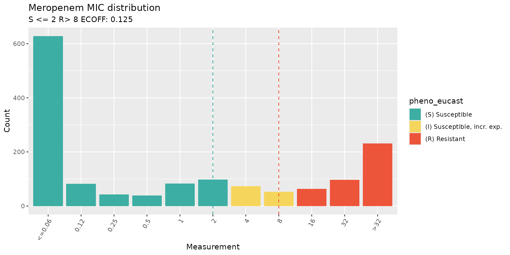
# Summary of meropenem phenotypes using ECOFF
kp_mero_euscape %>% count(ecoff)
#> # A tibble: 2 × 2
#> ecoff n
#> <sir> <int>
#> 1 WT 710
#> 2 NWT 780
# MIC distribution coloured by ECOFF
assay_by_var(
pheno_table = kp_mero_euscape,
pheno_drug = "Meropenem",
measure = "mic",
colour_by = "ecoff",
species = "Klebsiella pneumoniae"
)
#> MIC breakpoints determined using AMR package: S <= 2 and R > 8
#> NOTE: Multiple breakpoint entries, for different sites: Non-meningitis; Meningitis. Using the one with the highest S breakpoint (Non-meningitis).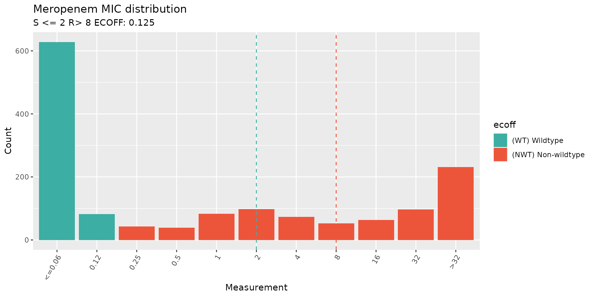
Genotypes from Kleborate
Kleborate screens Klebsiella pneumoniae species complex (KpSC) genome assemblies to identify sequence types (MLST), species, antimicrobial resistance (AMR) genes, virulence loci (e.g., yersiniabactin, aerobactin), and capsule/LPS serotypes (K and O antigens), published here. It can be run on the command line or via Pathogenwatch.
Import Kleborate Genotype Data
The import_kleborate() function imports the output table
from Kleborate,
extracts the AMR genotyping data, and formats it to be used with AMRgen
functions.
Mutation notation in Kleborate changed after v3.1.3 to adhere to HGVS Nomenclature, so:
To import Kleborate output <=v3.1.3 (using informal nomenclature (e.g. [gene]-[mutation], [gene]-X%, OmpK36GD)), in the
import_kleborate()function, sethgvs = FALSE.To import Kleborate output >v3.1.3 (using HGVS Nomenclature), in the
import_kleborate()function, set tohgvs=TRUE(which is already the default option).
We are importing the latest version of Kleborate which is in the development branch - commit #4ec1dcb from March 17, 2026. This version uses HGVS Nomenclature for describing mutations and includes an updated AMR database compared to the most recent Kleborate release v3.2.4.
A table of Kleborate results generated for the EuSCAPE genomes is
available in the AMRgen package as kleborate_raw. Let’s
import this to AMRgen genotype table format and summarise the
content:
# Updated Kleborate results from the development branch as of March 17, 2026 (commit #4ec1dcb)
head(kleborate_raw, n = 10)
#> # A tibble: 10 × 122
#> strain species species_match contig_count N50 largest_contig total_size
#> <chr> <chr> <chr> <dbl> <dbl> <dbl> <dbl>
#> 1 SAMEA349… Klebsi… strong 141 230759 470757 5578320
#> 2 SAMEA349… Klebsi… strong 88 370309 938079 5384685
#> 3 SAMEA349… Klebsi… strong 90 238750 529125 5446454
#> 4 SAMEA349… Klebsi… strong 144 207582 663698 5574298
#> 5 SAMEA349… Klebsi… strong 142 263498 678692 5486238
#> 6 SAMEA349… Klebsi… strong 79 285199 991412 5529803
#> 7 SAMEA349… Klebsi… strong 280 178980 585359 5817055
#> 8 SAMEA349… Klebsi… strong 108 209418 517450 5379124
#> 9 SAMEA349… Klebsi… strong 134 371444 984005 5558705
#> 10 SAMEA349… Klebsi… strong 142 197944 636773 5497421
#> # ℹ 115 more variables: GC_content <dbl>, ambiguous_bases <chr>,
#> # QC_warnings <chr>, ST <chr>, gapA <dbl>, infB <dbl>, mdh <dbl>, pgi <dbl>,
#> # phoE <dbl>, rpoB <dbl>, tonB <dbl>, YbST <chr>, Yersiniabactin <chr>,
#> # ybtS <chr>, ybtX <chr>, ybtQ <chr>, ybtP <chr>, ybtA <chr>, irp2 <chr>,
#> # irp1 <chr>, ybtU <chr>, ybtT <chr>, ybtE <chr>, fyuA <chr>,
#> # spurious_ybt_hits <chr>, CbST <chr>, Colibactin <chr>, clbA <chr>,
#> # clbB <chr>, clbC <chr>, clbD <chr>, clbE <chr>, clbF <chr>, clbG <chr>, …
# Import Kleborate
kleborate_dev <- import_kleborate(kleborate_raw)
# View summary of genotypes
summarise_geno(kleborate_dev)
#> $uniques
#> # A tibble: 6 × 2
#> column n_unique
#> <chr> <int>
#> 1 id 1490
#> 2 marker 470
#> 3 drug 1
#> 4 drug_class 13
#> 5 gene 293
#> 6 variation type 4
#>
#> $per_type
#> # A tibble: 4 × 6
#> `variation type` id marker drug drug_class gene
#> <chr> <int> <int> <int> <int> <int>
#> 1 Gene presence detected 1490 288 1 13 288
#> 2 Inactivating mutation detected 569 167 1 2 3
#> 3 Nucleotide variant detected 15 1 1 1 1
#> 4 Protein variant detected 874 14 1 2 3
#>
#> $drugs
#> # A tibble: 13 × 5
#> drug drug_class markers samples hits
#> <lgl> <chr> <int> <int> <int>
#> 1 NA Aminoglycosides 68 1060 2709
#> 2 NA Beta-lactams 76 1457 2833
#> 3 NA Carbapenems 153 770 1477
#> 4 NA Cephalosporins (3rd gen.) 18 648 668
#> 5 NA Macrolides 15 460 924
#> 6 NA Phenicols 16 479 572
#> 7 NA Phosphonics 17 1485 1490
#> 8 NA Polymyxins 33 138 138
#> 9 NA Quinolones 26 1021 2665
#> 10 NA Rifamycins 3 119 128
#> 11 NA Sulfonamides 13 917 1096
#> 12 NA Tetracyclines 12 514 554
#> 13 NA Trimethoprims 21 941 1110
#>
#> $markers
#> # A tibble: 471 × 5
#> marker drug drug_class `variation type` n
#> <chr> <lgl> <chr> <chr> <int>
#> 1 ACC-4.v1 NA Beta-lactams Gene presence detected 2
#> 2 CMY-13 NA Beta-lactams Gene presence detected 1
#> 3 CMY-16 NA Beta-lactams Gene presence detected 31
#> 4 CMY-2.v2 NA Beta-lactams Gene presence detected 1
#> 5 CMY-30 NA Cephalosporins (3rd gen.) Gene presence detected 1
#> 6 CMY-4.v1 NA Beta-lactams Gene presence detected 5
#> 7 CMY-6 NA Beta-lactams Gene presence detected 2
#> 8 CTX-M-1 NA Cephalosporins (3rd gen.) Gene presence detected 1
#> 9 CTX-M-14 NA Cephalosporins (3rd gen.) Gene presence detected 16
#> 10 CTX-M-15 NA Cephalosporins (3rd gen.) Gene presence detected 568
#> # ℹ 461 more rowsKleborate Genotype and Phenotype Summary
Summarize how many markers are associated with the beta-lactam and carbapenem drug class since Kleborate only operates at a drug class level.
summarise_geno_pheno(kleborate_dev, kp_mero_euscape,
pheno_cols = c("pheno_eucast", "ecoff")
)
#> $overlapping_samples
#> [1] 1490
#>
#> $drugs_with_pheno
#> # A tibble: 2 × 6
#> drug n drug_class drug_name spp_pheno mic
#> <ab> <int> <chr> <chr> <chr> <int>
#> 1 MEM 1490 Carbapenems Meropenem Klebsiella pneumoniae 1490
#> 2 MEM 1490 Beta-lactams Meropenem Klebsiella pneumoniae 1490
#>
#> $geno_hits
#> # A tibble: 2 × 6
#> drug drug_name drug_class markers samples hits
#> <lgl> <chr> <chr> <int> <int> <int>
#> 1 NA NA Beta-lactams 76 1457 2833
#> 2 NA NA Carbapenems 153 770 1477
#>
#> $geno_markers
#> # A tibble: 229 × 6
#> marker drug drug_name drug_class `variation type` n
#> <chr> <lgl> <chr> <chr> <chr> <int>
#> 1 ACC-4.v1 NA NA Beta-lactams Gene presence detected 2
#> 2 CMY-13 NA NA Beta-lactams Gene presence detected 1
#> 3 CMY-16 NA NA Beta-lactams Gene presence detected 31
#> 4 CMY-2.v2 NA NA Beta-lactams Gene presence detected 1
#> 5 CMY-4.v1 NA NA Beta-lactams Gene presence detected 5
#> 6 CMY-6 NA NA Beta-lactams Gene presence detected 2
#> 7 CTX-M-33 NA NA Carbapenems Gene presence detected 1
#> 8 DHA-1 NA NA Beta-lactams Gene presence detected 78
#> 9 IMP-1 NA NA Carbapenems Gene presence detected 3
#> 10 KPC-12 NA NA Carbapenems Gene presence detected 1
#> # ℹ 219 more rows
#>
#> $pheno_counts_list
#> $pheno_counts_list$ecoff
#> # A tibble: 1 × 5
#> drug drug_name spp_pheno WT NWT
#> <ab> <chr> <chr> <int> <int>
#> 1 MEM Meropenem Klebsiella pneumoniae 710 780
#>
#> $pheno_counts_list$pheno_eucast
#> # A tibble: 1 × 6
#> drug drug_name spp_pheno S I R
#> <ab> <chr> <chr> <int> <int> <int>
#> 1 MEM Meropenem Klebsiella pneumoniae 973 126 391Phenotypes vs Kleborate Genotypes
Generate Binary Matrix for Kleborate AMR Markers
Most AMRgen analysis functions require a binary matrix with one
sample per row, and columns indicating the phenotype and genotype data
in columns, where a 1 indicates the presence and
0 indicates the absence of the phenotype or genotypic
marker in that sample. This is produced using the
get_binary_matrix function:
kleborate_binary_matrix <- get_binary_matrix(
geno_table = kleborate_dev,
pheno_table = kp_mero_euscape,
pheno_drug = "Meropenem",
geno_class = c("Carbapenems"),
sir_col = "pheno_eucast",
keep_assay_values = TRUE,
keep_assay_values_from = "mic",
marker_col = "marker.label"
)
#> Defining NWT in binary matrix using ecoff column provided: ecoff
head(kleborate_binary_matrix, n = 10)
#> # A tibble: 10 × 24
#> id pheno ecoff mic R NWT `OmpK36..-` `OmpK35..-` `NDM-1` `OXA-48`
#> <chr> <sir> <sir> <mic> <dbl> <dbl> <dbl> <dbl> <dbl> <dbl>
#> 1 SAME… I NWT 4.00 0 1 1 0 0 0
#> 2 SAME… S WT <=0.06 0 0 0 0 0 0
#> 3 SAME… S NWT 1.00 0 1 1 1 0 0
#> 4 SAME… I NWT 4.00 0 1 1 0 0 0
#> 5 SAME… I NWT 4.00 0 1 1 1 0 0
#> 6 SAME… S WT <=0.06 0 0 0 0 0 0
#> 7 SAME… S WT <=0.06 0 0 0 0 0 0
#> 8 SAME… S NWT 2.00 0 1 1 0 0 0
#> 9 SAME… S WT <=0.06 0 0 0 0 0 0
#> 10 SAME… S NWT 0.50 0 1 1 0 0 0
#> # ℹ 14 more variables: `OmpK36..c.25C>T` <dbl>, `KPC-3` <dbl>,
#> # OmpK36..p.134_135insGD <dbl>, `KPC-2` <dbl>, OmpK36..p.135_136insD <dbl>,
#> # `OXA-204` <dbl>, `VIM-1` <dbl>, OmpK36..p.136_137insTD <dbl>,
#> # `VIM-4` <dbl>, `KPC-12` <dbl>, `OXA-232` <dbl>, `CTX-M-33` <dbl>,
#> # `OXA-162` <dbl>, `IMP-1` <dbl>Solo PPV Analysis for Kleborate AMR Markers
To understand the individual contribution of an AMR marker found
“solo” (i.e., in the absence of another carbapenem resistance
determinant), we use the solo_ppv() function.
The combined_plot is a visual representation of each AMR
marker found solo, the phenotypic distribution of isolates, and the
positive predictive values (PPVs). The solo_stats table
provides the PPVs, standard error (se), lower confidence
interval (ci.lower), and upper confidence interval
(ci.upper).
soloPPV_kleborate_mero <- solo_ppv(binary_matrix = kleborate_binary_matrix)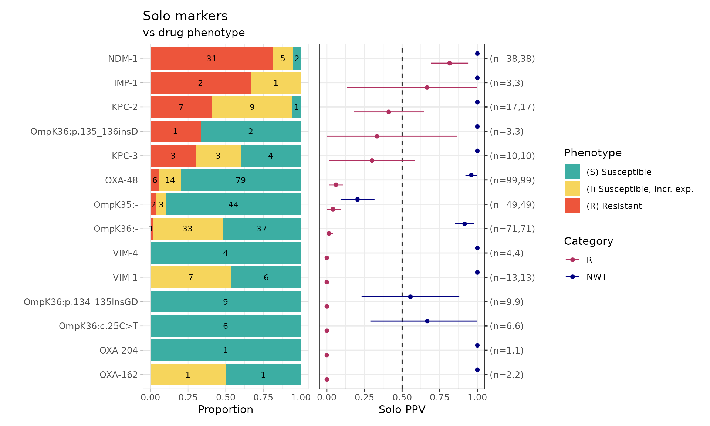
soloPPV_kleborate_mero$solo_stats
#> # A tibble: 28 × 8
#> marker category x n ppv se ci.lower ci.upper
#> <chr> <chr> <dbl> <int> <dbl> <dbl> <dbl> <dbl>
#> 1 OXA-162 R 0 2 0 0 0 0
#> 2 OXA-204 R 0 1 0 0 0 0
#> 3 OmpK36:c.25C>T R 0 6 0 0 0 0
#> 4 OmpK36:p.134_135insGD R 0 9 0 0 0 0
#> 5 VIM-1 R 0 13 0 0 0 0
#> 6 VIM-4 R 0 4 0 0 0 0
#> 7 OmpK36:- R 1 71 0.0141 0.0140 0 0.0415
#> 8 OmpK35:- R 2 49 0.0408 0.0283 0 0.0962
#> 9 OXA-48 R 6 99 0.0606 0.0240 0.0136 0.108
#> 10 KPC-3 R 3 10 0.3 0.145 0.0160 0.584
#> # ℹ 18 more rowsCombinatorial PPV Analysis for Kleborate AMR Markers
To understand the contribution of AMR markers found in combination
with one another, we use the ppv() function. The
plot is a visual summary of each AMR marker combination
observed in an UpSet plot format, including phenotypic distribution and
PPVs for each combination. The summary table includes each
AMR marker combination observed, including number of resistant isolates,
positive predictive values, and median assay values (and interquartile
range) where relevant.
comboPPV_kleborate_mero <- ppv(
binary_matrix = kleborate_binary_matrix,
order = "value",
min_set_size = 2,
pheno_drug = "Meropenem",
upset_grid = TRUE,
plot_assay = TRUE,
assay = "mic"
)
#> Scale for y is already present.
#> Adding another scale for y, which will replace the existing scale.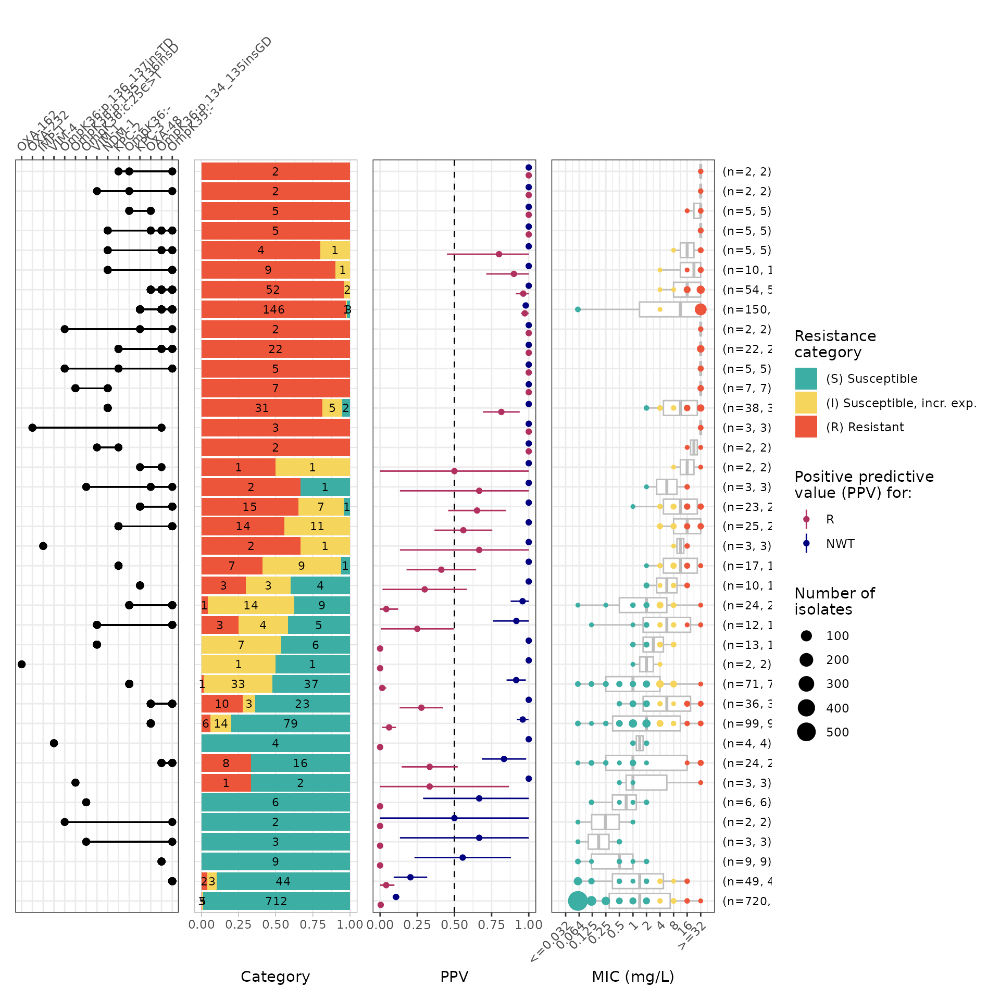
comboPPV_kleborate_mero$summary
#> # A tibble: 56 × 21
#> marker_list marker_count n combination_id R.n R.ppv R.ci_lower
#> <chr> <dbl> <int> <fct> <dbl> <dbl> <dbl>
#> 1 "" 0 720 0_0_0_0_0_0_0… 3 0.00417 0
#> 2 "IMP-1" 1 3 0_0_0_0_0_0_0… 2 0.667 0.133
#> 3 "OXA-162" 1 2 0_0_0_0_0_0_0… 0 0 0
#> 4 "VIM-4" 1 4 0_0_0_0_0_0_0… 0 0 0
#> 5 "VIM-1" 1 13 0_0_0_0_0_0_0… 0 0 0
#> 6 "OXA-204" 1 1 0_0_0_0_0_0_0… 0 0 0
#> 7 "OmpK36:p.135_136… 1 3 0_0_0_0_0_0_0… 1 0.333 0
#> 8 "KPC-2" 1 17 0_0_0_0_0_0_0… 7 0.412 0.178
#> 9 "KPC-2, VIM-1" 2 2 0_0_0_0_0_0_0… 2 1 1
#> 10 "OmpK36:p.134_135… 1 9 0_0_0_0_0_0_1… 0 0 0
#> # ℹ 46 more rows
#> # ℹ 14 more variables: R.ci_upper <dbl>, R.denom <int>, NWT.n <dbl>,
#> # NWT.ppv <dbl>, NWT.ci_lower <dbl>, NWT.ci_upper <dbl>, NWT.denom <int>,
#> # median_excludeRangeValues <dbl>, q25_excludeRangeValues <dbl>,
#> # q75_excludeRangeValues <dbl>, n_excludeRangeValues <int>,
#> # median_ignoreRanges <dbl>, q25_ignoreRanges <dbl>, q75_ignoreRanges <dbl>UpSet Plot for Kleborate AMR Markers
Similar to the previous ppv() function, the
amr_upset() function will generate a summary
table and plot that shows the combinations of AMR markers
found in the isolates and their phenotypic distribution. The
plot from amr_upset() is similar to the
plot generated by the previous ppv() function,
but missing the PPV panel.
# Changing the OmpK35:- and OmpK36:- labels to match the figures used in AMRgen paper (for figure aesthetics)
kleborate_binary_matrix_plotting <- kleborate_binary_matrix %>%
rename(`OmpK36-Δ` = `OmpK36..-`) %>%
rename(`OmpK35-Δ` = `OmpK35..-`)
kp_mic_upset_kleborate <- amr_upset(kleborate_binary_matrix_plotting, assay = "mic", bp_R = "8", bp_S = "2", ecoff_bp = "0.125", min_set_size = 1)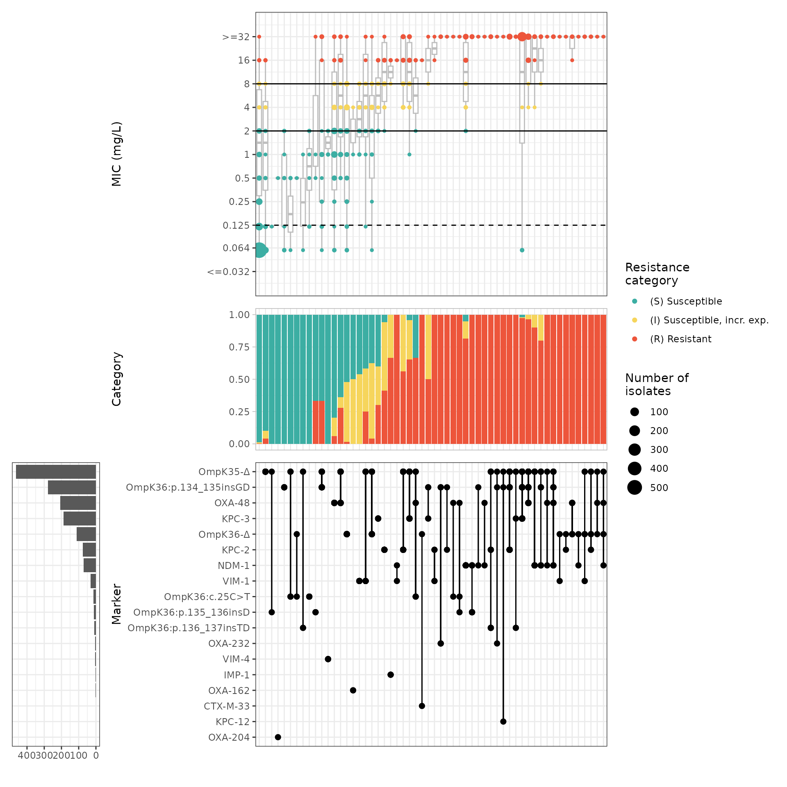
kp_mic_upset_kleborate$summary
#> # A tibble: 56 × 21
#> marker_list marker_count n combination_id R.n R.ppv R.ci_lower
#> <chr> <dbl> <int> <fct> <dbl> <dbl> <dbl>
#> 1 "" 0 720 0_0_0_0_0_0_0… 3 0.00417 0
#> 2 "IMP-1" 1 3 0_0_0_0_0_0_0… 2 0.667 0.133
#> 3 "OXA-162" 1 2 0_0_0_0_0_0_0… 0 0 0
#> 4 "VIM-4" 1 4 0_0_0_0_0_0_0… 0 0 0
#> 5 "VIM-1" 1 13 0_0_0_0_0_0_0… 0 0 0
#> 6 "OXA-204" 1 1 0_0_0_0_0_0_0… 0 0 0
#> 7 "OmpK36:p.135_136… 1 3 0_0_0_0_0_0_0… 1 0.333 0
#> 8 "KPC-2" 1 17 0_0_0_0_0_0_0… 7 0.412 0.178
#> 9 "KPC-2, VIM-1" 2 2 0_0_0_0_0_0_0… 2 1 1
#> 10 "OmpK36:p.134_135… 1 9 0_0_0_0_0_0_1… 0 0 0
#> # ℹ 46 more rows
#> # ℹ 14 more variables: R.ci_upper <dbl>, R.denom <int>, NWT.n <dbl>,
#> # NWT.ppv <dbl>, NWT.ci_lower <dbl>, NWT.ci_upper <dbl>, NWT.denom <int>,
#> # median_excludeRangeValues <dbl>, q25_excludeRangeValues <dbl>,
#> # q75_excludeRangeValues <dbl>, n_excludeRangeValues <int>,
#> # median_ignoreRanges <dbl>, q25_ignoreRanges <dbl>, q75_ignoreRanges <dbl>Group Kleborate AMR Markers
Since there are a number of carbapenem resistance gene alleles, we
want to group them by their respective gene families (e.g., KPC, VIM,
OXA, etc.) to simplify. In addition, we want to generalize porin
defects, so any OmpK35 or OmpK36 mutation detected with a
Ter or del in the HGVS nomenclature, we will
group together as OmpK35-\u0394 or
OmpK35-\u0394 representing a loss/truncation of the
protein.
# Selecting the relevant columns for relabeling and plotting later
kp_mero_euscape_mic <- kp_mero_euscape %>% select(id, measurement)
kp_Carb_kleborate_euscape <- kleborate_raw %>% select(strain, Omp_mutations, Bla_Carb_acquired)
kp_kleborate_mic_euscape <- left_join(kp_mero_euscape_mic, kp_Carb_kleborate_euscape, by = c("id" = "strain"))
# Grouping by carbapenem resistance genes into their gene family
kp_kleborate_mic_euscape <- kp_kleborate_mic_euscape %>%
mutate(Carb = case_when(
grepl(";", Bla_Carb_acquired) ~ "multiple",
grepl("KPC", Bla_Carb_acquired) ~ "KPC",
grepl("NDM", Bla_Carb_acquired) ~ "NDM",
grepl("OXA", Bla_Carb_acquired) ~ "OXA",
grepl("VIM", Bla_Carb_acquired) ~ "VIM",
grepl("IMP", Bla_Carb_acquired) ~ "IMP",
grepl("CTX-M", Bla_Carb_acquired) ~ "CTX-M",
TRUE ~ "none"
)) %>%
# Assigning wildtype (wt) or mutation (mut) porin status (i.e., any change from wt is considered mut)
mutate(Porin = if_else(Omp_mutations == "-", "wt", "mut"))
# Grouping porin mutations
kp_kleborate_mic_euscape <- kp_kleborate_mic_euscape %>%
mutate(ompK35_label = case_when(
grepl("OmpK35[^;]*(Ter|del)", Omp_mutations) ~ "OmpK35-\u0394",
TRUE ~ "OmpK35-wt"
)) %>%
mutate(ompK36_label = case_when(
grepl("OmpK36[^;]*(Ter|del)", Omp_mutations) ~ "OmpK36-\u0394",
grepl("OmpK36:p.134_135insGD", Omp_mutations) ~ "OmpK36:p.134_135insGD",
grepl("OmpK36:p.136_137insTD", Omp_mutations) ~ "OmpK36:p.136_137insTD",
grepl("OmpK36:c.25C>T", Omp_mutations) ~ "OmpK36:c.25C>T",
grepl("OmpK36:p.135_136insD", Omp_mutations) ~ "OmpK36:p.135_136insD",
TRUE ~ "OmpK36-wt"
)) %>%
mutate(porin_label = paste0(ompK35_label, "; ", ompK36_label)) %>%
mutate(porin_label = str_replace_all(porin_label, "OmpK35-wt; OmpK36-wt", "wt OmpK35 OmpK36")) %>%
mutate(porin_label = str_replace_all(porin_label, "OmpK35-wt; OmpK36-\u0394", "OmpK36-\u0394")) %>%
mutate(porin_label = str_replace_all(porin_label, "OmpK35-wt; OmpK36:c.25C>T", "OmpK36:c.25C>T")) %>%
mutate(porin_label = str_replace_all(porin_label, "OmpK35-wt; OmpK36:p.134_135insGD", "OmpK36:p.134_135insGD")) %>%
mutate(porin_label = str_replace_all(porin_label, "OmpK35-wt; OmpK36:p.135_136insD ", "OmpK36:p.135_136insD")) %>%
mutate(porin_label = str_replace_all(porin_label, "OmpK35-\u0394; OmpK36-wt", "OmpK35-\u0394")) %>%
mutate(porin_label = str_replace_all(porin_label, "OmpK35-wt; OmpK36:p.135_136insD", "OmpK36:p.135_136insD"))
# Setting the orders for plotting
kp_kleborate_mic_euscape$Porin <- factor(kp_kleborate_mic_euscape$Porin, levels = c("wt", "mut"))
kp_kleborate_mic_euscape$Carb <- factor(kp_kleborate_mic_euscape$Carb, levels = c("none", "KPC", "NDM", "OXA", "VIM", "IMP", "CTX-M", "multiple"))
kp_kleborate_mic_euscape$porin_label <- factor(kp_kleborate_mic_euscape$porin_label,
levels = c(
"wt OmpK35 OmpK36",
"OmpK35-\u0394",
"OmpK35-\u0394; OmpK36:p.134_135insGD",
"OmpK35-\u0394; OmpK36-\u0394",
"OmpK35-\u0394; OmpK36:p.136_137insTD",
"OmpK35-\u0394; OmpK36:c.25C>T",
"OmpK35-\u0394; OmpK36:p.135_136insD",
"OmpK36-\u0394",
"OmpK36:p.134_135insGD",
"OmpK36:p.135_136insD",
"OmpK36:c.25C>T"
)
)Plot the Grouped Kleborate AMR Markers
We will now generate a combined box plot + scatter plot that shows each isolate with its meropenem MIC value, generalized grouping of carbapenem resistance gene families and porin status, with detailed porin information.
# Counting the porin types to be used in the plot
counts <- kp_kleborate_mic_euscape %>%
count(porin_label)
labels_with_n <- setNames(
paste0(counts$porin_label, " (n=", counts$n, ")"),
counts$porin_label
)
# Generate the plot
kp_kleborate_grouped_plot <- ggplot(
kp_kleborate_mic_euscape,
aes("", as.numeric(measurement))
) +
geom_boxplot(width = 0.7, outlier.shape = NA) +
geom_jitter(aes(color = porin_label), size = 1.5, alpha = 0.7) +
scale_color_manual(
name = "Porin Status",
values = c(
"wt OmpK35 OmpK36" = "grey",
"OmpK35-\u0394" = "#DE4BAD",
"OmpK35-\u0394; OmpK36:p.134_135insGD" = "#3B81E3",
"OmpK35-\u0394; OmpK36-\u0394" = "#7FB550",
"OmpK35-\u0394; OmpK36:p.136_137insTD" = "#ff8a5e",
"OmpK35-\u0394; OmpK36:c.25C>T" = "#733808",
"OmpK35-\u0394; OmpK36:p.135_136insD" = "pink",
"OmpK36-\u0394" = "#fff2a6",
"OmpK36:p.134_135insGD" = "#935BBD",
"OmpK36:p.135_136insD" = "red",
"OmpK36:c.25C>T" = "black"
),
labels = labels_with_n
) +
# log2 scale for MIC distribution
scale_y_continuous(
trans = "log2", breaks = c(0.25, 0.5, 1, 2, 4, 8, 16, 32),
name = "Meropenem MIC (mg/L)"
) +
# horizontal reference lines for EUCAST and ECOFF
geom_hline(yintercept = 2, linetype = "solid", color = "black", linewidth = 0.4) +
geom_hline(yintercept = 8, linetype = "solid", color = "black", linewidth = 0.4) +
geom_hline(yintercept = 0.125, linetype = "dashed", color = "black", linewidth = 0.4) +
facet_grid(
. ~ Carb + Porin,
switch = "x"
) +
theme_bw() +
theme(
strip.placement = "outside",
strip.background = element_blank(),
panel.border = element_blank(),
panel.grid = element_blank(),
panel.spacing = unit(0, "lines"),
axis.line = element_line(color = "black", linewidth = 0.4),
plot.margin = margin(5.5, 5.5, 5.5, 60)
) +
labs(x = "")
kp_kleborate_grouped_plot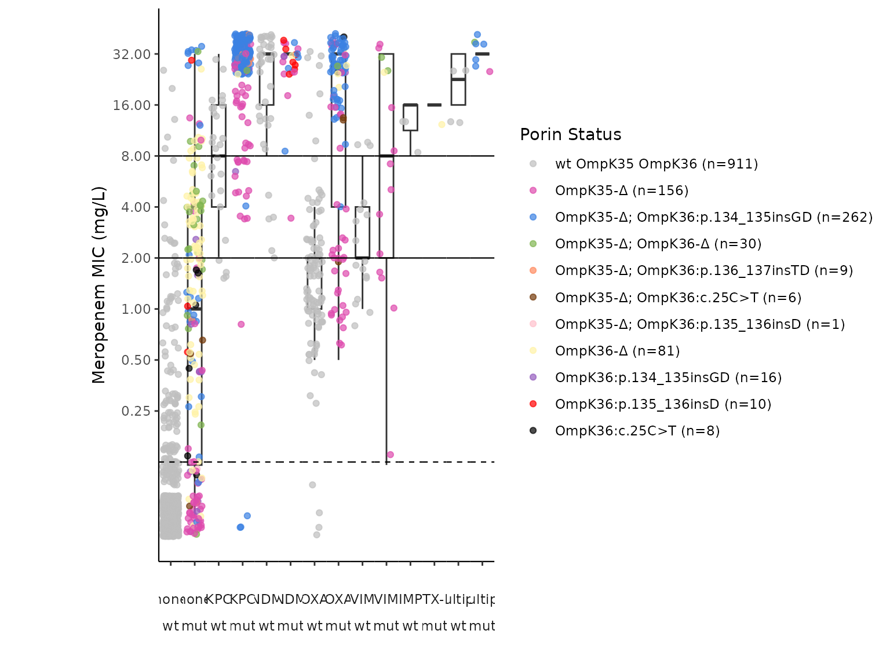
# if you have the 'cowplot' library you can use it to add labels "Carb" and "Porin" to the rows at the bottom of the plot
library(cowplot)
ggdraw(kp_kleborate_grouped_plot) +
draw_label("Carb", x = 0.08, y = 0.11, hjust = 0, fontface = "bold", size = 10) +
draw_label("Porin", x = 0.08, y = 0.065, hjust = 0, fontface = "bold", size = 10)From the above kp_kleborate_grouped_plot plot (with
ECOFF = 0.125mg/L, EUCAST Susceptible breakpoint at <=2mg/L, EUCAST
Resistant breakpoint >8mg/L), we can see that in isolates:
- with no carbapenemase and wildtype (wt) porin, the median meropenem MIC is <0.25mg/L.
- with any porin defect (no carbapenemase), the median meropenem MIC is elevated to 1mg/L.
Across isolates with only a single carbapenemase (and wildtype porin), median MICs generally remained below the EUCAST resistant breakpoint (>8 mg/L), except for those carrying NDM, IMP, or multiple carbapenemases, which exceeded the resistant breakpoint.
Notably, isolates with KPC or OXA carbapenemases had median MICs ≤2 mg/L and the presence of a porin defect increased the median MICs to above the EUCAST resistant breakpoint.
Mean (Median) Meropenem MIC Table
While the kp_kleborate_grouped_plot plot is useful for
visually inspecting the median MIC values, to numerically show the mean
(median) meropenem MIC (mg/L) for isolates with different carbapenem
resistance gene families and porin statuses, we will generate a
table.
# Simplifying porin status
kp_kleborate_mic_euscape <- kp_kleborate_mic_euscape %>%
mutate(ompK35 = case_when(
grepl("OmpK35[^;]*(Ter|del)", Omp_mutations) ~ "\u0394",
TRUE ~ "wt"
)) %>%
mutate(ompK36 = case_when(
grepl("OmpK36[^;]*(Ter|del)", Omp_mutations) ~ "\u0394",
grepl("OmpK36:p.134_135insGD", Omp_mutations) ~ "Loop mutation",
grepl("OmpK36:p.136_137insTD", Omp_mutations) ~ "Loop mutation",
grepl("OmpK36:p.135_136insD", Omp_mutations) ~ "Loop mutation",
grepl("OmpK36:c.25C>T", Omp_mutations) ~ "c25t mutation",
TRUE ~ "wt"
))
# Convert the table into wide format with porin status as rows and carbapenemase status as columns
mean_MIC_table <- kp_kleborate_mic_euscape %>%
group_by(ompK35, ompK36, Carb) %>%
summarise(
mean_MIC = round(mean(as.numeric(measurement), na.rm = TRUE), 1),
median_MIC = round(median(as.numeric(measurement), na.rm = TRUE), 1),
.groups = "drop"
) %>%
mutate(mean_median = paste0(mean_MIC, " (", median_MIC, ")")) %>%
select(-mean_MIC, -median_MIC) %>%
pivot_wider(
names_from = Carb,
values_from = mean_median
) %>%
select(ompK35, ompK36, none, KPC, NDM, OXA, VIM, IMP, `CTX-M`, multiple) %>%
mutate(order_group = case_when(
ompK35 == "wt" & ompK36 == "wt" ~ 1,
ompK35 == "\u0394" & ompK36 == "wt" ~ 2,
ompK35 == "\u0394" & ompK36 == "Loop mutation" ~ 3,
ompK35 == "\u0394" & ompK36 == "c25t mutation" ~ 4,
ompK35 == "\u0394" & ompK36 == "\u0394" ~ 5,
ompK35 == "wt" & ompK36 == "Loop mutation" ~ 6,
ompK35 == "wt" & ompK36 == "c25t mutation" ~ 7,
ompK35 == "wt" & ompK36 == "\u0394" ~ 8,
TRUE ~ 9
)) %>%
arrange(order_group) %>%
select(-order_group)
mean_MIC_table
#> # A tibble: 8 × 10
#> ompK35 ompK36 none KPC NDM OXA VIM IMP `CTX-M` multiple
#> <chr> <chr> <chr> <chr> <chr> <chr> <chr> <chr> <chr> <chr>
#> 1 wt wt 0.3 (0.1) 10.6 … 23.6… 3.2 … 3.3 … 13.3… NA 24 (24)
#> 2 Δ wt 1.2 (0.1) 17.4 … 27.6… 8 (2) 9.3 … NA NA 32 (32)
#> 3 Δ Loop mutation 9.4 (1) 31.3 … 27.2… 27.6… NA NA NA 32 (32)
#> 4 Δ c25t mutation 0.4 (0.5) NA NA 11.3… NA NA NA NA
#> 5 Δ Δ 4.7 (4) 32 (3… NA 32 (… 32 (… NA NA 32 (32)
#> 6 wt Loop mutation 3.3 (0.5) 24 (3… 32 (… 32 (… NA NA NA NA
#> 7 wt c25t mutation 1 (0.8) NA NA 32 (… NA NA NA NA
#> 8 wt Δ 3.5 (2) 32 (3… 32 (… 28.8… 32 (… NA 16 (16) NA
# If you have the gt pacakge, you can use it to make the table aesthetically pleasing
library(gt)
mean_MIC_table_aes <- mean_MIC_table %>%
gt() %>%
cols_label(
ompK35 = html("<b>OmpK35</b>"),
ompK36 = html("<b>OmpK36</b>"),
none = html("<b>None</b>"),
KPC = html("<b>KPC</b>"),
NDM = html("<b>NDM</b>"),
OXA = html("<b>OXA</b>"),
VIM = html("<b>VIM</b>"),
IMP = html("<b>IMP</b>"),
`CTX-M` = html("<b>CTX-M</b>"),
multiple = html("<b>Multiple</b>")
) %>%
tab_spanner(
label = html("<b>Porin status</b>"),
columns = c("ompK35", "ompK36")
) %>%
tab_spanner(
label = html("<b>Carbapenemase status</b>"),
columns = c("none", "KPC", "NDM", "OXA", "VIM", "IMP", "CTX-M", "multiple")
) %>%
fmt_missing(
columns = everything(),
missing_text = "-"
) %>%
# Background color based on EUCAST breakpoints
data_color(
columns = c("none", "KPC", "NDM", "OXA", "VIM", "IMP", "CTX-M", "multiple"),
fn = function(x) {
numeric_vals <- as.numeric(str_extract(x, "^[0-9.]+"))
case_when(
is.na(numeric_vals) ~ "transparent",
numeric_vals <= 2 ~ "#3CAEA3",
numeric_vals <= 8 ~ "#F6D55C",
numeric_vals > 8 ~ "#ED553B"
)
}
) %>%
# Changing orange cells to have white font so it is easier to see the numbers
data_color(
columns = c("none", "KPC", "NDM", "OXA", "VIM", "IMP", "CTX-M", "multiple"),
fn = function(x) {
numeric_vals <- as.numeric(str_extract(x, "^[0-9.]+"))
case_when(
is.na(numeric_vals) ~ "black",
numeric_vals > 8 ~ "white",
TRUE ~ "black"
)
},
apply_to = "text"
) %>%
# aligning columns
cols_align(
align = "center",
columns = everything()
) %>%
# text options
tab_options(
table.font.names = "Arial",
table.font.size = 14,
heading.title.font.size = 16,
table.border.top.color = "black",
table.border.bottom.color = "black"
) %>%
# column widths
cols_width(
ompK35 ~ px(125),
ompK36 ~ px(125),
everything() ~ px(100)
)
# Adding title and legend for colour
mean_MIC_table_aes <- mean_MIC_table_aes %>%
tab_header(
title = html("<b>Mean (Median) Meropenem Minimum Inhibitory Concentration (mg/L)</b>"),
subtitle = html(
"<span style='font-size:12px;'>
<b>EUCAST clinical breakpoint:</b>
<span style='color:#3CAEA3;'>■</span> Susceptible (≤ 2 mg/L)
<span style='color:#F6D55C;'>■</span> Intermediate (susceptible, increased exposure; 2–8 mg/L)
<span style='color:#ED553B;'>■</span> Resistant (> 8 mg/L)
</span>"
)
)
mean_MIC_table_aesIn the mean_MIC_table table above, you can see that
isolates have: - a mean meropenem MIC of 0.3mg/L, when they have
wildtype OmpK35/36 porin status with no carbapenemase
- a mean meropenem MIC that exceeds the EUCAST R breakpoint (>8mg/L)
when a KPC, NDM, or IMP or multiple carbapenemases are harboured
Specifically, for OXA-encoding isolates, the only porin defect that does not change the median meropenem MIC is OmpK35-Δ, whereas all other porin defects shift the median MIC to 16-32mg/L.
Isolates with VIM carbapenemases alone had a median MIC of 2 mg/L, which increased to 8 mg/L when combined with porin defects (particularly OmpK36-Δ or the loss of both porins).
The only porin defects that raise the mean meropenem MIC above EUCAST S breakpoint (<=2mg/L) are:
- OmpK35-Δ and OmpK36 β-strand Loop 3 insertion,
- OmpK35-Δ and OmpK36-Δ,
- OmpK36 β-strand Loop 3 insertion,
- OmpK36-Δ
In summary, the presence of any carbapenemase with any porin defect elevates the mean meropenem MIC to above the EUCAST R breakpoint, with the exception of isolates harbouring an OXA carbapenemase and OmpK35-Δ.
Make Figure for AMRgen manuscript
The code below was used to combine the UpSet plot (created using the
amr_upset() function), the grouped carbapenemase/porin
status plot, and the mean (median) meropenem MIC table as shown in the
AMRgen manuscript. To make these components you need the
cowplot and gt packages as noted above, as
well as the png packages.
library(png)
# Save the table as a temporary file to retrieve it later when combining the panels
tmp <- tempfile(fileext = ".png")
gtsave(
mean_MIC_table_aes,
tmp,
vwidth = 4000,
vheight = 300
)
table_grob <- rasterGrob(
png::readPNG(tmp),
interpolate = TRUE
)
# Add whitespace to the right and left of table
table_with_padding <- plot_grid(
NULL, # left spacer
table_grob,
NULL, # right spacer
ncol = 3,
rel_widths = c(0.001, 0.85, 0.149) # 5% white on each side
)
# Save the figure with panel labels
ggsave("Figure5_Kp_EuSCAPE.png",
plot = plot_grid(
kp_mic_upset_kleborate$plot,
kp_kleborate_mic_euscape_plot_label,
table_with_padding,
labels = c("a)", "b)", "c)"),
ncol = 1,
rel_heights = c(1, 0.9, 0.5)
),
width = 12, height = 15,
bg = "white"
)Genotypes from Kleborate v3.1.3
Import Kleborate (<= v3.1.3) Genotype Data
We will now compare the latest version of Kleborate (which we’ve been using up until this point) development branch; commit #4ec1dcb to an older version of Kleborate v3.1.3. The older versions (<=v3.1.3) of Kleborate uses informal nomenclature to describe mutations (e.g. [gene]-[mutation], [gene]-X%, OmpK36GD), whereas the updated version follows the HGVS nomenclature standard.
A table of Kleborate v3.1.3 results generated for the EuSCAPE genomes
is available in the AMRgen package as kleborate_raw_v313.
Let’s import it and summarise its contents:
# View Kleborate output v3.1.3 (using informal nomenclature (e.g. [gene]-[mutation], [gene]-X%, OmpK36GD))
head(kleborate_raw_v313, n = 10)
#> # A tibble: 10 × 113
#> strain species species_match contig_count N50 largest_contig total_size
#> <chr> <chr> <chr> <dbl> <dbl> <dbl> <dbl>
#> 1 SAMEA349… Klebsi… strong 141 230759 470757 5578320
#> 2 SAMEA349… Klebsi… strong 88 370309 938079 5384685
#> 3 SAMEA349… Klebsi… strong 90 238750 529125 5446454
#> 4 SAMEA349… Klebsi… strong 144 207582 663698 5574298
#> 5 SAMEA349… Klebsi… strong 142 263498 678692 5486238
#> 6 SAMEA349… Klebsi… strong 79 285199 991412 5529803
#> 7 SAMEA349… Klebsi… strong 280 178980 585359 5817055
#> 8 SAMEA349… Klebsi… strong 108 209418 517450 5379124
#> 9 SAMEA349… Klebsi… strong 134 371444 984005 5558705
#> 10 SAMEA349… Klebsi… strong 142 197944 636773 5497421
#> # ℹ 106 more variables: ambiguous_bases <chr>, QC_warnings <chr>, ST <chr>,
#> # gapA <dbl>, infB <dbl>, mdh <dbl>, pgi <dbl>, phoE <dbl>, rpoB <dbl>,
#> # tonB <dbl>, YbST <chr>, Yersiniabactin <chr>, ybtS <chr>, ybtX <chr>,
#> # ybtQ <chr>, ybtP <chr>, ybtA <chr>, irp2 <chr>, irp1 <chr>, ybtU <chr>,
#> # ybtT <chr>, ybtE <chr>, fyuA <chr>, spurious_ybt_hits <chr>, CbST <chr>,
#> # Colibactin <chr>, clbA <chr>, clbB <chr>, clbC <chr>, clbD <chr>,
#> # clbE <chr>, clbF <chr>, clbG <chr>, clbH <chr>, clbI <chr>, clbL <chr>, …
# Use import_kleborate() function and set `hgvs = FALSE` for Kleborate outputs generated from <=v3.1.3 (using non-HGVS nomenclature)
kleborate_v313 <- import_kleborate(
input_table = kleborate_raw_v313,
sample_col = "strain",
hgvs = FALSE
)
# Summarize genotype table
summarise_geno(kleborate_v313, sample_col = "id", marker_col = "marker.label")
#> $uniques
#> # A tibble: 6 × 2
#> column n_unique
#> <chr> <int>
#> 1 id 1489
#> 2 marker.label 263
#> 3 drug 1
#> 4 drug_class 13
#> 5 gene 263
#> 6 variation type 4
#>
#> $per_type
#> # A tibble: 4 × 6
#> `variation type` id marker.label drug drug_class gene
#> <chr> <int> <int> <int> <int> <int>
#> 1 Gene presence detected 1489 246 1 13 246
#> 2 Inactivating mutation detected 568 3 1 2 3
#> 3 Nucleotide variant detected 15 1 1 1 1
#> 4 Protein variant detected 874 13 1 2 13
#>
#> $drugs
#> # A tibble: 13 × 5
#> drug drug_class markers samples hits
#> <lgl> <chr> <int> <int> <int>
#> 1 NA Aminoglycosides 59 1057 3140
#> 2 NA Beta-lactams 76 1457 2833
#> 3 NA Carbapenems 17 766 1459
#> 4 NA Cephalosporins (3rd gen.) 18 648 668
#> 5 NA Macrolides 14 460 923
#> 6 NA Phenicols 12 469 558
#> 7 NA Phosphonics 1 3 3
#> 8 NA Polymyxins 3 138 138
#> 9 NA Quinolones 25 1020 2422
#> 10 NA Rifamycins 2 114 114
#> 11 NA Sulfonamides 9 913 1090
#> 12 NA Tetracyclines 9 503 541
#> 13 NA Trimethoprims 18 886 1017
#>
#> $markers
#> # A tibble: 263 × 5
#> marker.label drug drug_class `variation type` n
#> <chr> <lgl> <chr> <chr> <int>
#> 1 ACC-4 NA Beta-lactams Gene presence detected 2
#> 2 CMY-13 NA Beta-lactams Gene presence detected 1
#> 3 CMY-16 NA Beta-lactams Gene presence detected 31
#> 4 CMY-2.v2 NA Beta-lactams Gene presence detected 1
#> 5 CMY-30 NA Cephalosporins (3rd gen.) Gene presence detected 1
#> 6 CMY-4.v1 NA Beta-lactams Gene presence detected 5
#> 7 CMY-6 NA Beta-lactams Gene presence detected 2
#> 8 CTX-M-1 NA Cephalosporins (3rd gen.) Gene presence detected 1
#> 9 CTX-M-14 NA Cephalosporins (3rd gen.) Gene presence detected 16
#> 10 CTX-M-15 NA Cephalosporins (3rd gen.) Gene presence detected 568
#> # ℹ 253 more rowsCompare Kleborate versions
Comparing only the carbapenem resistance determinants from an updated version Kleborate (development branch) to a previous version (v3.1.3).
# Grouping Kleborate development branch carbapenem resistance determinants, so that there is one row per sample
kleborate_dev_markers_grouped <- kleborate_dev %>%
filter(Kleborate_Class == "Omp_mutations" | Kleborate_Class == "Bla_Carb_acquired") %>%
select(id, marker.label) %>%
rename(kleborate = marker.label) %>%
group_by(id) %>%
summarise(
Kleborate_dev_markers = kleborate %>%
sort() %>%
str_c(collapse = ";")
)
# Since we know that Kleborate v3.1.3 does not use HGVS notation, we will change the names of the OmpK36 mutations to match HGVS notation for comparison purposes
# After, we group them so there is one row per sample
kleborate_v313_markers_grouped <- kleborate_v313 %>%
filter(Kleborate_Class == "Omp_mutations" | Kleborate_Class == "Bla_Carb_acquired") %>%
select(id, marker.label) %>%
mutate(
marker.label = str_replace_all(marker.label, "OmpK36GD", "OmpK36:p.134_135insGD"),
marker.label = str_replace_all(marker.label, "OmpK36_c25t", "OmpK36:c.25C>T"),
marker.label = str_replace_all(marker.label, "OmpK36TD", "OmpK36:p.136_137insTD")
) %>%
rename(kleborate = marker.label) %>%
group_by(id) %>%
summarise(
Kleborate_v313_markers = kleborate %>%
sort() %>%
str_c(collapse = ";")
)
# Joining Kleborate version tables for comparison
compare_kleborate_versions <- full_join(
kleborate_dev_markers_grouped,
kleborate_v313_markers_grouped
)
#> Joining with `by = join_by(id)`
# Comparing Kleborate versions and creating two new columns to show what each version is missing
compare_kleborate_versions <- compare_kleborate_versions %>%
rowwise() %>%
mutate(
dev_missing = {
v313_vec <- str_split(Kleborate_v313_markers, ";")[[1]]
dev_vec <- str_split(Kleborate_dev_markers, ";")[[1]]
missing <- setdiff(v313_vec, dev_vec)
if (length(missing) == 0) NA_character_ else str_c(missing, collapse = ";")
},
v313_missing = {
v313_vec <- str_split(Kleborate_v313_markers, ";")[[1]]
dev_vec <- str_split(Kleborate_dev_markers, ";")[[1]]
missing <- setdiff(dev_vec, v313_vec)
if (length(missing) == 0) NA_character_ else str_c(missing, collapse = ";")
}
) %>%
ungroup()
# Table listing the AMR markers that are missing from Kleborate v3.1.3
compare_kleborate_versions %>% count(v313_missing, sort = TRUE)
#> # A tibble: 4 × 2
#> v313_missing n
#> <chr> <int>
#> 1 NA 752
#> 2 OmpK36:p.135_136insD 12
#> 3 OmpK35:- 4
#> 4 OmpK36:- 2
# Table listing the AMR markers that are missing from the updated Kleborate version
compare_kleborate_versions %>% count(dev_missing, sort = TRUE)
#> # A tibble: 1 × 2
#> dev_missing n
#> <chr> <int>
#> 1 NA 770We can see that there are no carbapenem resistance determinants missed by the updated Kleborate development version, in fact, the new version now additionally calls OmpK36:p.135_136insD (n=12), and OmpK35:- (n=4), and OmpK36:- (n=2) that were previously unidentified.
Noting that there are no new carbapenem resistance genes identified in this new version of Kleborate which includes an updated AMR database.
Up until this point, we have only explored using different versions of Kleborate as the AMR genotyper. The next few sections will explore using different AMR genotypers and comparing their results.
First up, we have AMRFinderPlus!
Genotypes from AMRFinderPlus
NCBI has developed AMRFinderPlus, a tool that identifies AMR genes, resistance-associated point mutations, and select other classes of genes using protein annotations and/or assembled nucleotide sequence, published here. It can only be used via command line and also has organism-specific options.
Import AMRFinderPlus Genotype Data
The download_ebi() can download AMRFinderPlus genotype data from the EBI AMR portal, filter your species of interest, and reformat into AMRgen genotype table. The AMRFinderPlus data being used here is from the 2025-12 release using AMRFinderPlus version v4.0. Noting that as of AMRFinderPlus (v4.2.5), there is additional functionality to identify putatively function disrupting mutations in genes (i.e., ompk35 and ompk36 loss and truncations) that lead to resistance, which Kleborate already identifies.
# Download Klebsiella pneumoniae genotype AMRFinderPlus data and re-format the data into an AMRgen genotype table
amrfp <- download_ebi(
data = "genotype", species = "Klebsiella pneumoniae",
reformat = T
)
# Filter for isolates in EuSCAPE paper with meropenem phenotypes and remove contaminated samples
kp_mero_amrfp <- kp_mero_amrfp %>%
filter(id %in% kp_mero_euscape$id) %>%
filter(!id %in% contaminated_assemblies)A copy of this data frame is avaiable in the AMRgen pacakge as
kp_mero_amrfp:
head(kp_mero_amrfp)
#> # A tibble: 6 × 34
#> id marker gene mutation drug_agent drug_class marker.label assembly_ID
#> <chr> <chr> <chr> <chr> <ab> <chr> <chr> <chr>
#> 1 SAMEA364… ompK3… ompK… Asp135A… NA Carbapene… ompK36:Asp1… GCA_900500…
#> 2 SAMEA364… gyrA_… gyrA Ser83Ile NA Quinolones gyrA:Ser83I… GCA_900500…
#> 3 SAMEA364… fosA fosA - FOS Phosphoni… fosA GCA_900500…
#> 4 SAMEA364… parC_… parC Ser80Ile NA Quinolones parC:Ser80I… GCA_900500…
#> 5 SAMEA364… oqxB oqxB - NA Phenicols oqxB GCA_900500…
#> 6 SAMEA364… oqxB oqxB - NA Quinolones oqxB GCA_900500…
#> # ℹ 26 more variables: genus <chr>, species <chr>, organism <chr>,
#> # isolate <chr>, taxon_id <int>, region <chr>, region_start <int>,
#> # region_end <int>, strand <chr>, `_bin` <int>, id2 <chr>, gene_symbol <chr>,
#> # amr_element_symbol <chr>, element_type <chr>, element_subtype <chr>,
#> # class <chr>, subclass <chr>, split_subclass <chr>, antibiotic_name <chr>,
#> # antibiotic_ontology <chr>, antibiotic_ontology_link <chr>,
#> # evidence_accession <chr>, evidence_type <chr>, evidence_link <chr>, …
# Summary of carbapenem resistance determinants
summarise_geno(kp_mero_amrfp)
#> $uniques
#> # A tibble: 4 × 2
#> column n_unique
#> <chr> <int>
#> 1 id 1490
#> 2 marker 237
#> 3 drug_class 20
#> 4 gene 218
#>
#> $per_type
#> NULL
#>
#> $drugs
#> # A tibble: 20 × 4
#> drug_class markers samples n
#> <chr> <int> <int> <int>
#> 1 Aminoglycosides 35 1020 6046
#> 2 Beta-lactams 45 1424 2353
#> 3 Carbapenems 16 669 956
#> 4 Cephalosporins 1 23 48
#> 5 Cephalosporins (3rd gen.) 36 788 1479
#> 6 Efflux 1 1483 1483
#> 7 Glycopeptides 1 49 49
#> 8 Lincosamides 3 3 5
#> 9 Macrolides 7 479 6818
#> 10 Other 1 2 4
#> 11 Penicillins 1 4 16
#> 12 Phenicols 25 1458 3802
#> 13 Phosphonics 5 1488 1491
#> 14 Polymyxins 12 40 40
#> 15 Quinolones 40 1468 4959
#> 16 Rifamycins 3 110 119
#> 17 Streptogramins 2 83 249
#> 18 Sulfonamides 3 931 1206
#> 19 Tetracyclines 12 605 699
#> 20 Trimethoprims 12 539 563
#>
#> $markers
#> # A tibble: 261 × 3
#> marker drug_class n
#> <chr> <chr> <int>
#> 1 aac(3)-IId Aminoglycosides 122
#> 2 aac(3)-IIe Aminoglycosides 379
#> 3 aac(3)-IIg Aminoglycosides 14
#> 4 aac(3)-IVa Aminoglycosides 45
#> 5 aac(3)-Ia Aminoglycosides 5
#> 6 aac(3)-VIa Aminoglycosides 1
#> 7 aac(6')-IIc Aminoglycosides 189
#> 8 aac(6')-Ib Aminoglycosides 3100
#> 9 aac(6')-Ib' Aminoglycosides 11
#> 10 aac(6')-Ib-cr Aminoglycosides 24
#> # ℹ 251 more rowsCompare AMRFinderPlus to Kleborate genotype results
We are going to compare the AMRFinderPlus results that we just downloaded and the Kleborate development branch results. We know that there are differences between AMRFinderPlus and Kleborate development branch in detecting porin defects:
Kleborate development branch does not identify OmpK35_E132K. As per NCBI Reference Gene Catalog, the citation related to this mutation is PMID: 20660684. In the paper, the mutation (ompK35_E132K) is detected in a strain (AIS080884) with an ompk36 mutation (Ser255Thr) that is categorized as low carbapenem resistance. There is no other other literature that experimentally tests this mutation alone, other papers only report the presence of the mutation (often in combination with other mutations/carbapenemases).
AMRFinderPlus (<v4.2.5) only does not detect nucleotide mutations (e.g., OmpK36_c25t), nor does it detect loss of OmpK35/36 (e.g., OmpK35:- or OmpK36:-).
As such, these differences make it difficult to compare, so we will
simplify and remove OmpK35:- and OmpK36:- from
the Kleborate development branch results.
# To count and see the names of the carbapenem resistance determinants
kp_mero_amrfp %>%
filter(drug_class == "Carbapenems") %>%
count(marker, sort = TRUE)
#> # A tibble: 16 × 2
#> marker n
#> <chr> <int>
#> 1 ompK36_D135DGD 281
#> 2 blaOXA-48 219
#> 3 blaKPC-3 194
#> 4 blaKPC-2 77
#> 5 blaNDM-1 73
#> 6 blaVIM-1 32
#> 7 blaVIM-4 25
#> 8 ompK35_E132K 22
#> 9 ompK36_D135DD 12
#> 10 ompK36_T136TDT 9
#> 11 blaOXA-232 4
#> 12 blaIMP-1 3
#> 13 blaOXA-162 2
#> 14 blaNDM 1
#> 15 blaOXA-204 1
#> 16 blaOXA-427 1
# Massaging AMRfp marker names to match Kleborate names
amrfp_simplified <- kp_mero_amrfp %>%
filter(drug_class == "Carbapenems") %>%
mutate(
marker_amrfp = str_replace_all(marker, "bla", ""),
marker_amrfp = str_replace_all(marker_amrfp, "ompK36_D135DGD", "OmpK36:p.134_135insGD"),
marker_amrfp = str_replace_all(marker_amrfp, "ompK36_D135DD", "OmpK36:p.135_136insD"),
marker_amrfp = str_replace_all(marker_amrfp, "ompK36_T136TDT", "OmpK36:p.136_137insTD")
) %>%
select(id, marker_amrfp) %>%
rename(AMRfp = marker_amrfp) %>%
group_by(id) %>%
summarise(
AMRfp_markers = AMRfp %>%
sort() %>%
str_c(collapse = ";")
)
# Filtering Kleborate AMR markers
# Excluding `OmpK35:-` and `OmpK36:-` since we know that AMRfinderplus (<v4.2.5) does not detect loss/truncations of OmpK35 and OmpK36
kleborate_dev_simplified <- kleborate_dev %>%
filter(Kleborate_Class == "Omp_mutations" | Kleborate_Class == "Bla_Carb_acquired") %>%
select(id, marker.label) %>%
rename(kleborate = marker.label) %>%
filter(!kleborate %in% c("OmpK35:-", "OmpK36:-")) %>%
group_by(id) %>%
summarise(
Kleborate_markers = kleborate %>%
sort() %>%
str_c(collapse = ";")
)
# Joining AMRFinderPlus and Kleborate tables
compare_amrfp_kleborate <- full_join(
amrfp_simplified,
kleborate_dev_simplified
)
#> Joining with `by = join_by(id)`
# Comparing AMRFinderPlus and Kleborate tables and creating two new columns to show what AMRFinderPlus is missing and what Kleborate is missing
compare_amrfp_kleborate <- compare_amrfp_kleborate %>%
rowwise() %>%
mutate(
Kleborate_dev_missing = {
amr_vec <- str_split(AMRfp_markers, ";")[[1]]
kleb_vec <- str_split(Kleborate_markers, ";")[[1]]
missing <- setdiff(amr_vec, kleb_vec)
if (length(missing) == 0) NA_character_ else str_c(missing, collapse = ";")
},
AMRfp_missing = {
amr_vec <- str_split(AMRfp_markers, ";")[[1]]
kleb_vec <- str_split(Kleborate_markers, ";")[[1]]
missing <- setdiff(kleb_vec, amr_vec)
if (length(missing) == 0) NA_character_ else str_c(missing, collapse = ";")
}
) %>%
ungroup()
# Table listing the AMR markers that are missing from Kleborate (but detected in AMRFinderPlus)
compare_amrfp_kleborate %>% count(Kleborate_dev_missing, sort = TRUE)
#> # A tibble: 11 × 2
#> Kleborate_dev_missing n
#> <chr> <int>
#> 1 NA 610
#> 2 ompK35_E132K 22
#> 3 VIM-4 21
#> 4 OXA-48 10
#> 5 KPC-3 7
#> 6 OmpK36:p.134_135insGD 3
#> 7 KPC-2 2
#> 8 NDM-1 2
#> 9 NDM 1
#> 10 OXA-427 1
#> 11 VIM-1 1
# Table listing the AMR markers that are missing from AMRFinderPlus (but detected in Kleborate)
compare_amrfp_kleborate %>% count(AMRfp_missing, sort = TRUE)
#> # A tibble: 4 × 2
#> AMRfp_missing n
#> <chr> <int>
#> 1 NA 663
#> 2 OmpK36:c.25C>T 15
#> 3 CTX-M-33 1
#> 4 KPC-12 1Since we know there are differences in porin defect detection between
Kleborate and AMRFinderPlus, we can focus on the carbapenemase
detection. AMRFinderPlus is missing the detection of
CTX-M-33 in one genome and KPC-12 in another
genome.
CTX-M-33
However, AMRFinderPlus is not “missing” CTX-M-33 and
KPC-12 in their database. In the case of
CTX-M-33, it is detected in n=1 genome and is annotated as
conferring resistance to Cephalosporins (3rd gen.) instead
of Carbapenems, which is why it has been excluded from the
AMR genotype table since we filtered for
drug_class=="Carbapenems".
# CTX-M-33 is annotated as conferring resistance to Cephalosporins (3rd gen.) and is identified by AMRFinderPlus in Sample SAMEA3721133
kp_mero_amrfp %>%
filter(gene == "blaCTX-M-33") %>%
select(id, gene, drug_class)
#> # A tibble: 1 × 3
#> id gene drug_class
#> <chr> <chr> <chr>
#> 1 SAMEA3721133 blaCTX-M-33 Cephalosporins (3rd gen.)
# Confirming that CTX-M-33 is identified in SAMEA3721133 using Kleborate development branch
compare_amrfp_kleborate %>%
filter(AMRfp_missing == "CTX-M-33") %>%
select(id, AMRfp_markers, Kleborate_markers)
#> # A tibble: 1 × 3
#> id AMRfp_markers Kleborate_markers
#> <chr> <chr> <chr>
#> 1 SAMEA3721133 NA CTX-M-33
# Checking phenotype of SAMEA3721133
kp_mero_euscape %>%
filter(id == "SAMEA3721133") %>%
select(id, mic, pheno_eucast, ecoff)
#> # A tibble: 1 × 4
#> id mic pheno_eucast ecoff
#> <chr> <mic> <sir> <sir>
#> 1 SAMEA3721133 16 R NWT The primary literature that describes CTX-M-33 by Galani, et
al. describes the clinical strain of E. coli 2439
harbouring CTX-M-33, E. coli RC85 recipient, and E.
coli 2439 transconjugant (aka E. coli RC85 recipient + CTX-M-33).
The authors performed antibiotic susceptibility tests on E.
coli RC85 recipient and E. coli 2439 transconjugant which
showed that MIC for third gen cephalosporins increased, but the MIC for
imipenem remained the when harbouring CTX-M-33. In the Comprehensive
Antibiotic Resistance Database (CARD, v4.0.1) CTX-M-33 is annotated
as conferring resistance to cephalosporins (not carbapenems). The
EuSCAPE isolate (SAMEA3721133 from above) only harbours CTM-M-33 and is
meropenem resistant. Based on this conflicting evidence, it is unclear
if CTX-M-33 in K. pneumoniae confers resistance to
carbapenems. The experimental work was performed in an E. coli
strain and not K. pneumoniae and only imipenem was the only
carbapenem tested. Additional experimental work and epidemiological
support from K. pneumoniae strains harbouring CTX-M-33 with
carbapenem susceptibility test results is needed to understand the
substrate activity of CTX-M-33.
KPC-12
Similarly, in the case of KPC-12, it is detected in n=1
genome using AMRFinderPlus and is annotated as conferring resistance to
Cephalosporins (3rd gen.) instead of
Carbapenems, which is why it has been excluded from the
genotype table since we filtered for
drug_class=="Carbapenems".
# KPC-12 is annotated as conferring resistance to Cephalosporins (3rd gen.) and is identified by AMRFinderPlus in Sample SAMEA3649729
kp_mero_amrfp %>%
filter(gene == "blaKPC-12") %>%
select(id, gene, drug_class)
#> # A tibble: 1 × 3
#> id gene drug_class
#> <chr> <chr> <chr>
#> 1 SAMEA3649729 blaKPC-12 Cephalosporins (3rd gen.)
# Confirming that KPC-12 is identified in SAMEA3649729 using Kleborate. It also harbours OmpK36:p.134_135insGD
compare_amrfp_kleborate %>%
filter(AMRfp_missing == "KPC-12") %>%
select(id, AMRfp_markers, Kleborate_markers)
#> # A tibble: 1 × 3
#> id AMRfp_markers Kleborate_markers
#> <chr> <chr> <chr>
#> 1 SAMEA3649729 OmpK36:p.134_135insGD KPC-12;OmpK36:p.134_135insGD
# Checking phenotype of SAMEA3649729
kp_mero_euscape %>%
filter(id == "SAMEA3649729") %>%
select(id, mic, pheno_eucast, ecoff)
#> # A tibble: 1 × 4
#> id mic pheno_eucast ecoff
#> <chr> <mic> <sir> <sir>
#> 1 SAMEA3649729 32 R NWT The only primary literature discussing KPC-12 is by Han, et al. where they
show that a strain of E. coli DH5alpha + empty plasmid
vs. E. coli DH5alpha + plasmid with KPC-12 does
not change meropenem MIC (0.06mg/L) with small elevation in imipenem
(0.25 vs. 1 mg/L) and ertapenem (<=0.12mg/L vs. 0.25 mg/L) MICs.
Whereas, E. coli DH5alpha + empty plasmid vs. E. coli
DH5alpha + plasmid with KPC-12 elevates the MICs for
ceftriaxone (<=0.25 vs. >=64 mg/L, 3rd gen cephalosporin) and
cefuroxime (8 vs. 256 mg/L, 2nd gen cephalosporin). This experiment was
performed in an E. coli strain, not K. pneumoniae. In
the EuSCAPE dataset (from above), there is only one isolate
(SAMEA3649729) with KPC-12, which harbours both KPC-12 and
OmpK36:p.134_135insGD and is meropenem resistant. Based on this
conflicting evidence, it is not clear whether KPC-12 should
be changed to conferring resistance to 3rd generation cephalosporins or
carbapenems. Similar to Kleborate, CARD v4.0.1 also has KPC-12 annotated as a
carbapenemase. Further experimental work performed in a K.
pneumoniae strain and having additional evidence from K.
pneumoniae strains with genotype-phenotype data can help strengthen
our understanding of its substrate specificity.
We will not continue to investigate what is missing in the Kleborate development branch, compared to AMRFinderPlus, for the purpose and lengthiness of this vignette. These two examples act as ways to investigate differences in AMR genotypers and how ultimately, choosing a specific genotyper will impact the foundation upon which we understand AMR genotype-phenotype relationships.
Next up, we have the Resistance Gene Identifier (RGI)!
Genotypes from Resistance Gene Identifier (RGI)
RGI identifies resistance determinants from protein or nucleotide data using homology and mutation models, published here. The software uses reference data from the Comprehensive Antibiotic Resistance Database. It can be run via the website or on the command line.
CARD is an ontology-drive database including resistance genes, their
products, and the antibiotics they confer resistance towards. CARD
operates at both a drug class and drug-specific level, where curators
can establish gene confers_resistance_to_drug antibiotic
relationships. Lastly, CARD includes both intrinsic/core and acquired
resistance determinants.
Import Resistance Gene Identifier (RGI) results
Import RGI results using the import_rgi() function. This
function imports and processes genotyping results from RGI extracting
antimicrobial resistance determinants and mapping them to standardised
drug classes/antibiotics. It also shortens determinant names using
CARD Short Names as provided by CARD (https://card.mcmaster.ca/download in
aro_index.tsv).
Note: Check the number of genomes that you expect
using summarise_geno(). RGI text output will be empty if
there are no AMR determinants identified in the submitted genome, so you
have to either:
Add sample IDs with no AMR determinants into the
ORF_IDcolumn of the RGI text output that you are importing, orList your sample IDs in a vector using the
samples_no_amr=parameter in theimport_rgi()function. For example,import_rgi(rgi_EuSCAPE_raw, samples_no_amr = c("SampleA_noAMR", "SampleB_noAMR", "SampleC_noAMR"))
The data frame rgi_EuSCAPE_raw included in the AMRgen
package provides CARD RGI calls for the EuSCAPE genomes:
# Sample IDs with no AMR determinants have been added to rgi_EuSCAPE_raw under the `ORF_ID` column with the rest of the rows left blank
tail(rgi_EuSCAPE_raw, n = 10)
#> # A tibble: 10 × 26
#> ORF_ID Contig Start Stop Orientation Cut_Off Pass_Bitscore Best_Hit_Bitscore
#> <chr> <dbl> <dbl> <dbl> <chr> <chr> <dbl> <dbl>
#> 1 SAMEA… NA NA NA NA NA NA NA
#> 2 SAMEA… NA NA NA NA NA NA NA
#> 3 SAMEA… NA NA NA NA NA NA NA
#> 4 SAMEA… NA NA NA NA NA NA NA
#> 5 SAMEA… NA NA NA NA NA NA NA
#> 6 SAMEA… NA NA NA NA NA NA NA
#> 7 SAMEA… NA NA NA NA NA NA NA
#> 8 SAMEA… NA NA NA NA NA NA NA
#> 9 SAMEA… NA NA NA NA NA NA NA
#> 10 SAMEA… NA NA NA NA NA NA NA
#> # ℹ 18 more variables: Best_Hit_ARO <chr>, Best_Identities <dbl>, ARO <dbl>,
#> # Model_type <chr>, SNPs_in_Best_Hit_ARO <chr>, Other_SNPs <chr>,
#> # `Drug Class` <chr>, `Resistance Mechanism` <chr>, `AMR Gene Family` <chr>,
#> # `Percentage Length of Reference Sequence` <dbl>, ID <chr>, Model_ID <dbl>,
#> # Nudged <lgl>, Note <lgl>, Hit_Start <dbl>, Hit_End <dbl>, Antibiotic <chr>,
#> # AST_Source <chr>
# Import RGI output with n=1490 isolates
rgi <- import_rgi(rgi_EuSCAPE_raw)
# Summarize genotype data
summarise_geno(rgi)
#> $uniques
#> # A tibble: 5 × 2
#> column n_unique
#> <chr> <int>
#> 1 id 1490
#> 2 marker 252
#> 3 drug 109
#> 4 drug_class 30
#> 5 variation type 3
#>
#> $per_type
#> # A tibble: 3 × 5
#> `variation type` id marker drug drug_class
#> <chr> <int> <int> <int> <int>
#> 1 Gene presence detected 1430 233 98 29
#> 2 Protein variant detected 1445 18 37 13
#> 3 NA 45 1 1 1
#>
#> $drugs
#> # A tibble: 114 × 5
#> drug drug_class markers samples hits
#> <chr> <chr> <int> <int> <int>
#> 1 2'-N-ethylnetilmicin Aminoglycosides 8 462 492
#> 2 5-episisomicin Aminoglycosides 3 37 37
#> 3 6'-N-ethylnetilmicin Aminoglycosides 6 449 456
#> 4 AMK Aminoglycosides 18 1445 3846
#> 5 AMP Aminopenicillins 22 1445 10675
#> 6 AMX Aminopenicillins 6 747 1110
#> 7 APR Aminoglycosides 1 5 5
#> 8 ARB Aminoglycosides 4 72 73
#> 9 AST Aminoglycosides 2 17 17
#> 10 ATM Monobactams 1 1 1
#> # ℹ 104 more rows
#>
#> $markers
#> # A tibble: 815 × 5
#> marker drug drug_class `variation type` n
#> <chr> <chr> <chr> <chr> <int>
#> 1 AAC(3)-IIc 2'-N-ethylnetilmicin Aminoglycosides Gene presence detected 16
#> 2 AAC(3)-IIc 6'-N-ethylnetilmicin Aminoglycosides Gene presence detected 16
#> 3 AAC(3)-IIc DKB Aminoglycosides Gene presence detected 16
#> 4 AAC(3)-IIc GEN Aminoglycosides Gene presence detected 16
#> 5 AAC(3)-IIc NET Aminoglycosides Gene presence detected 16
#> 6 AAC(3)-IIc SIS Aminoglycosides Gene presence detected 16
#> 7 AAC(3)-IIc TOB Aminoglycosides Gene presence detected 16
#> 8 AAC(3)-IId 2'-N-ethylnetilmicin Aminoglycosides Gene presence detected 88
#> 9 AAC(3)-IId 6'-N-ethylnetilmicin Aminoglycosides Gene presence detected 88
#> 10 AAC(3)-IId DKB Aminoglycosides Gene presence detected 88
#> # ℹ 805 more rowsGenerate Binary Matrix for RGI AMR Markers
rgi_binary_matrix <- get_binary_matrix(
geno_table = rgi,
pheno_table = kp_mero_euscape,
pheno_drug = "Meropenem",
geno_class = c("Carbapenems"),
sir_col = "pheno_eucast",
marker_col = "marker.label",
keep_assay_values = TRUE,
keep_assay_values_from = "mic"
)
#> Defining NWT in binary matrix using ecoff column provided: ecoffSolo PPV Analysis for RGI AMR Markers
# No solo markers error when you run solo_ppv()! Since CARD/RGI includes intrinsic and acquired resistance determinants, there could be intrinsic / core resistance determinants that are found across most (if not all) genomes which obstructs our view of carbapenem resistance determinants found alone.
soloPPV_rgi_mero <- solo_ppv(binary_matrix = rgi_binary_matrix)As such, we will exclude the core/intrinsic resistance determinants, using their prevalence and exclude any determinants identified across more than 80% of genomes.
rgi_binary_matrix_prev80 <- rgi_binary_matrix %>%
select(where(~ {
if (is.numeric(.x)) {
prop_ones <- mean(.x == 1, na.rm = TRUE) # fraction of 1s
prop_ones <= 0.80 # keep only if ≤ 80% prevalent across all genomes
} else {
TRUE
}
}))Try running the solo_ppv() function again.
soloPPV_rgi_mero <- solo_ppv(binary_matrix = rgi_binary_matrix_prev80)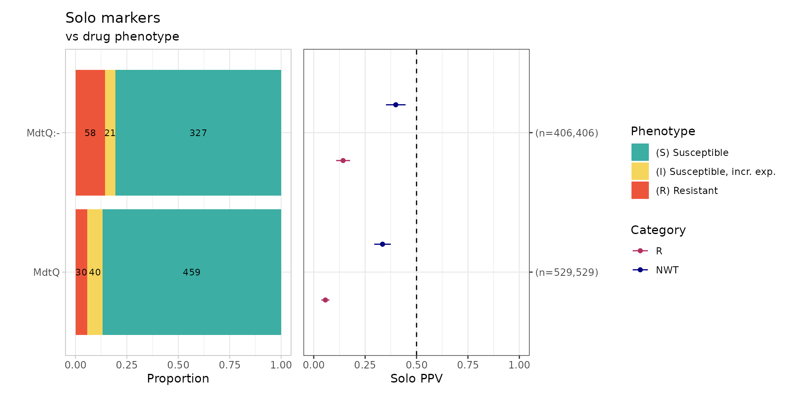
# Count number of genomes that have either `MdtQ` or `MdtQ:-`
sum(rgi_binary_matrix_prev80$MdtQ == "1" | rgi_binary_matrix_prev80$`MdtQ..-` == "1", na.rm = TRUE)
#> [1] 1429Only MdtQ and MdtQ variants (MdtQ:-) were identified in the absence of other carbapenem resistance determinants. MdtQ is an outer-membrane porin identified in K. pneumoniae - however the primary paper by Fan, et al. only reports a clinical strain with MdtQ resistant to carbapenems, but does not show antibiotic susceptibility tests for proper controls of the same strain with MdtQ vs. without MdtQ. In addition, 96% (n=1429/1490) of the EuSCAPE K. pneumoniae genomes have MdtQ or a variant of MdtQ, therefore it could be considered a core gene. In summary, because is no compelling evidence that MdtQ confers resistance to carbapenems and that it is likely a core gene, we will exclude it from further analyses.
# Exclude MdtQ and MdtQ:- from the binary matrix
rgi_binary_matrix_prev80 <- rgi_binary_matrix_prev80 %>% select(-MdtQ, -`MdtQ..-`)Try running the solo_ppv() function… again.
soloPPV_rgi_mero <- solo_ppv(binary_matrix = rgi_binary_matrix_prev80)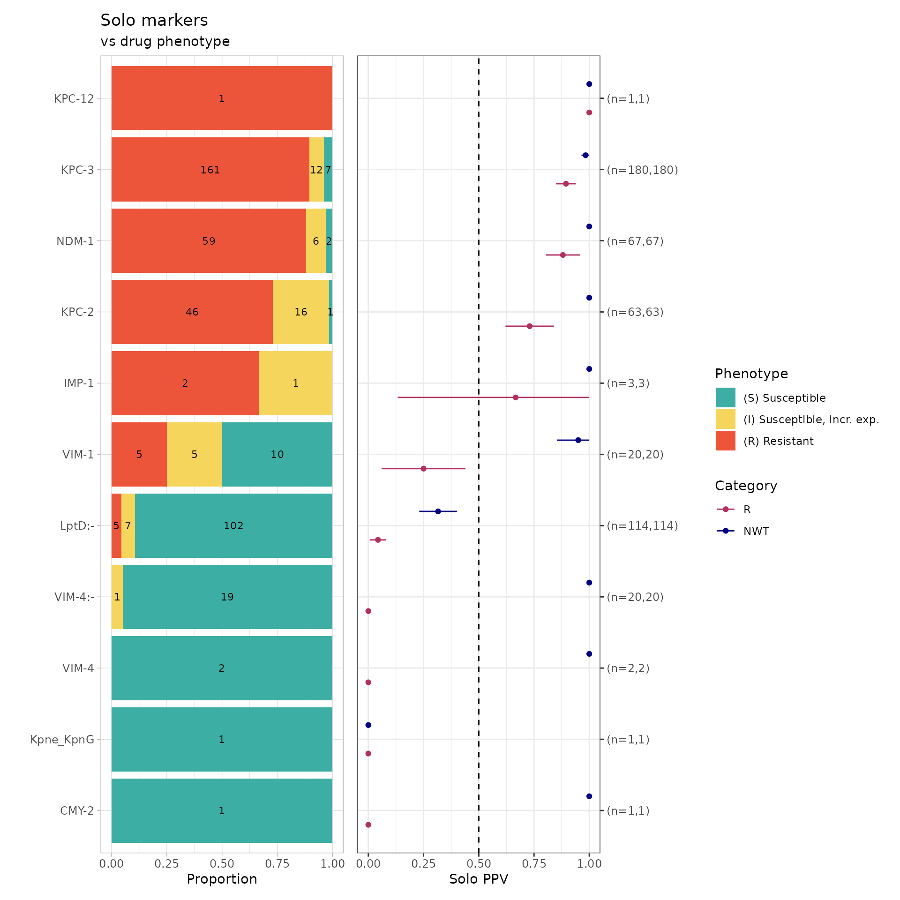
We can finally see carbapenem resistance determinants alone! Since
RGI does not detect porin defects, many AMR markers are found alone
compared to Kleborate’s and AMRFinderPlus’ solo_ppv() (see
below). For example, NDM-1 alone was found in 59 resistant genomes
(using RGI), 31 resistant genomes (using Kleborate), and 41 resistant
genomes (using AMRFinderPlus).
soloPPV_kleborate_mero
#> $solo_stats
#> # A tibble: 28 × 8
#> marker category x n ppv se ci.lower ci.upper
#> <chr> <chr> <dbl> <int> <dbl> <dbl> <dbl> <dbl>
#> 1 OXA-162 R 0 2 0 0 0 0
#> 2 OXA-204 R 0 1 0 0 0 0
#> 3 OmpK36:c.25C>T R 0 6 0 0 0 0
#> 4 OmpK36:p.134_135insGD R 0 9 0 0 0 0
#> 5 VIM-1 R 0 13 0 0 0 0
#> 6 VIM-4 R 0 4 0 0 0 0
#> 7 OmpK36:- R 1 71 0.0141 0.0140 0 0.0415
#> 8 OmpK35:- R 2 49 0.0408 0.0283 0 0.0962
#> 9 OXA-48 R 6 99 0.0606 0.0240 0.0136 0.108
#> 10 KPC-3 R 3 10 0.3 0.145 0.0160 0.584
#> # ℹ 18 more rows
#>
#> $combined_plot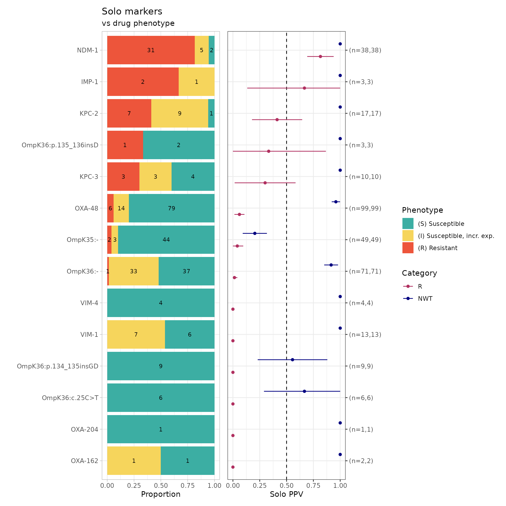
#>
#> $solo_binary
#> # A tibble: 325 × 8
#> id pheno ecoff mic R NWT marker value
#> <chr> <sir> <sir> <mic> <dbl> <dbl> <chr> <dbl>
#> 1 SAMEA3498967 I NWT 4.00 0 1 OmpK36:- 1
#> 2 SAMEA3498970 I NWT 4.00 0 1 OmpK36:- 1
#> 3 SAMEA3498975 S NWT 2.00 0 1 OmpK36:- 1
#> 4 SAMEA3498992 S NWT 0.50 0 1 OmpK36:- 1
#> 5 SAMEA3498996 S WT <=0.06 0 0 OmpK35:- 1
#> 6 SAMEA3498997 S NWT 0.50 0 1 OmpK36:- 1
#> 7 SAMEA3498998 S NWT 2.00 0 1 OmpK36:- 1
#> 8 SAMEA3499003 R NWT >32.00 1 1 NDM-1 1
#> 9 SAMEA3499004 R NWT 32.00 1 1 OmpK36:- 1
#> 10 SAMEA3499010 S WT <=0.06 0 0 OmpK35:- 1
#> # ℹ 315 more rows
#>
#> $solo_binary_norange
#> NULL
#>
#> $amr_binary
#> # A tibble: 1,490 × 24
#> id pheno ecoff mic R NWT `OmpK36..-` `OmpK35..-` `NDM-1` `OXA-48`
#> <chr> <sir> <sir> <mic> <dbl> <dbl> <dbl> <dbl> <dbl> <dbl>
#> 1 SAME… I NWT 4.00 0 1 1 0 0 0
#> 2 SAME… S WT <=0.06 0 0 0 0 0 0
#> 3 SAME… S NWT 1.00 0 1 1 1 0 0
#> 4 SAME… I NWT 4.00 0 1 1 0 0 0
#> 5 SAME… I NWT 4.00 0 1 1 1 0 0
#> 6 SAME… S WT <=0.06 0 0 0 0 0 0
#> 7 SAME… S WT <=0.06 0 0 0 0 0 0
#> 8 SAME… S NWT 2.00 0 1 1 0 0 0
#> 9 SAME… S WT <=0.06 0 0 0 0 0 0
#> 10 SAME… S NWT 0.50 0 1 1 0 0 0
#> # ℹ 1,480 more rows
#> # ℹ 14 more variables: `OmpK36..c.25C>T` <dbl>, `KPC-3` <dbl>,
#> # OmpK36..p.134_135insGD <dbl>, `KPC-2` <dbl>, OmpK36..p.135_136insD <dbl>,
#> # `OXA-204` <dbl>, `VIM-1` <dbl>, OmpK36..p.136_137insTD <dbl>,
#> # `VIM-4` <dbl>, `KPC-12` <dbl>, `OXA-232` <dbl>, `CTX-M-33` <dbl>,
#> # `OXA-162` <dbl>, `IMP-1` <dbl>
#>
#> $plot_order
#> OXA-162 OXA-204 OmpK36:c.25C>T
#> "(n=2,2)" "(n=1,1)" "(n=6,6)"
#> OmpK36:p.134_135insGD VIM-1 VIM-4
#> "(n=9,9)" "(n=13,13)" "(n=4,4)"
#> OmpK36:- OmpK35:- OXA-48
#> "(n=71,71)" "(n=49,49)" "(n=99,99)"
#> KPC-3 OmpK36:p.135_136insD KPC-2
#> "(n=10,10)" "(n=3,3)" "(n=17,17)"
#> IMP-1 NDM-1
#> "(n=3,3)" "(n=38,38)"
# Generate binary matrix for AMRFinderPlus
amrfp_binary_matrix <- get_binary_matrix(
geno_table = kp_mero_amrfp,
pheno_table = kp_mero_euscape,
pheno_drug = "Meropenem",
geno_class = c("Carbapenems"),
sir_col = "pheno_eucast",
keep_assay_values = TRUE,
keep_assay_values_from = "mic"
)
#> Defining NWT in binary matrix using ecoff column provided: ecoff
# Solo PPV analysis
soloPPV_amrfp_mero <- solo_ppv(binary_matrix = amrfp_binary_matrix)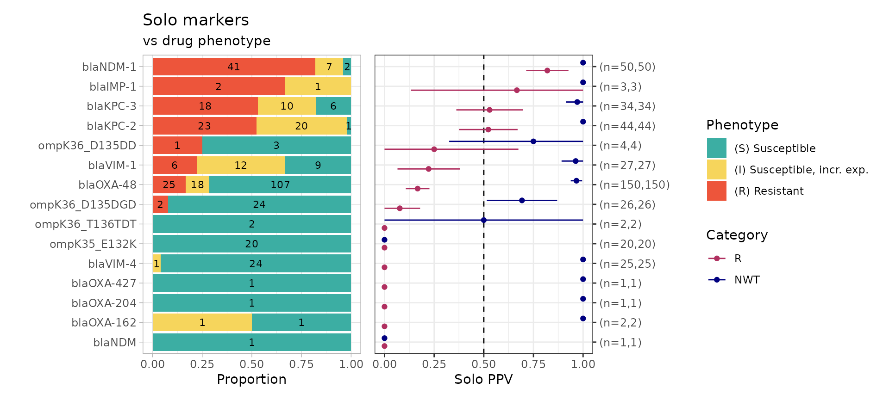
Combinatorial PPV Analysis for RGI AMR Markers
comboPPV_rgi_mero <- ppv(
binary_matrix = rgi_binary_matrix_prev80,
order = "value",
min_set_size = 2,
pheno_drug = "Meropenem",
upset_grid = TRUE,
plot_assay = TRUE,
assay = "mic"
)
#> Scale for y is already present.
#> Adding another scale for y, which will replace the existing scale.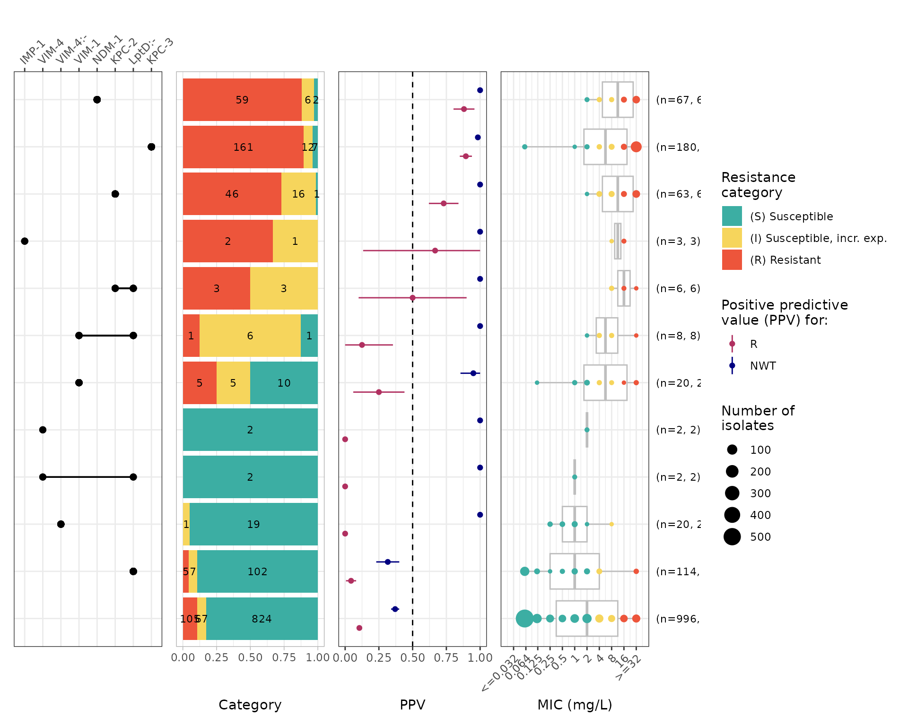
# Summary of combinatorial PPV
comboPPV_rgi_mero$summary
#> # A tibble: 21 × 21
#> marker_list marker_count n combination_id R.n R.ppv R.ci_lower
#> <chr> <dbl> <int> <fct> <dbl> <dbl> <dbl>
#> 1 "" 0 996 0_0_0_0_0_0_0_… 105 0.105 0.0863
#> 2 "IMP-1" 1 3 0_0_0_0_0_0_0_… 2 0.667 0.133
#> 3 "CMY-2" 1 1 0_0_0_0_0_0_0_… 0 0 0
#> 4 "KPC-12" 1 1 0_0_0_0_0_0_0_… 1 1 1
#> 5 "Kpne_KpnG" 1 1 0_0_0_0_0_0_0_… 0 0 0
#> 6 "VIM-4" 1 2 0_0_0_0_0_0_1_… 0 0 0
#> 7 "VIM-4:-" 1 20 0_0_0_0_0_1_0_… 0 0 0
#> 8 "VIM-1" 1 20 0_0_0_0_1_0_0_… 5 0.25 0.0602
#> 9 "LptD:-" 1 114 0_0_0_1_0_0_0_… 5 0.0439 0.00627
#> 10 "LptD:-, NDM-69:-" 2 1 0_0_0_1_0_0_0_… 0 0 0
#> # ℹ 11 more rows
#> # ℹ 14 more variables: R.ci_upper <dbl>, R.denom <int>, NWT.n <dbl>,
#> # NWT.ppv <dbl>, NWT.ci_lower <dbl>, NWT.ci_upper <dbl>, NWT.denom <int>,
#> # median_excludeRangeValues <dbl>, q25_excludeRangeValues <dbl>,
#> # q75_excludeRangeValues <dbl>, n_excludeRangeValues <int>,
#> # median_ignoreRanges <dbl>, q25_ignoreRanges <dbl>, q75_ignoreRanges <dbl>Evidently, RGI does not detect OmpK35 or OmpK36 defects so we can only compare the carbapenemases that are detected by RGI vs. Kleborate development branch.
Compare RGI to Kleborate Genotype Results
rgi_simplified <- rgi %>%
filter(drug_class == "Carbapenems") %>%
filter(`Resistance Mechanism` == "antibiotic inactivation") %>%
select(id, marker.label) %>%
distinct() %>%
rename(rgi = marker.label) %>%
group_by(id) %>%
summarise(
rgi_markers = rgi %>%
sort() %>%
str_c(collapse = ";")
)
kleborate_simplified <- kleborate_dev %>%
filter(Kleborate_Class == "Omp_mutations" | Kleborate_Class == "Bla_Carb_acquired") %>%
select(id, marker.label) %>%
rename(kleborate = marker.label) %>%
filter(!grepl("OmpK35|OmpK36", kleborate)) %>%
group_by(id) %>%
summarise(
Kleborate_markers = kleborate %>%
sort() %>%
str_c(collapse = ";")
)
compare_rgi_kleborate <- full_join(
rgi_simplified,
kleborate_simplified
)
#> Joining with `by = join_by(id)`
compare_rgi_kleborate <- compare_rgi_kleborate %>%
rowwise() %>%
mutate(
Kleborate_missing = {
rgi_vec <- str_split(rgi_markers, ";")[[1]]
kleb_vec <- str_split(Kleborate_markers, ";")[[1]]
missing <- setdiff(rgi_vec, kleb_vec)
if (length(missing) == 0) NA_character_ else str_c(missing, collapse = ";")
},
rgi_missing = {
rgi_vec <- str_split(rgi_markers, ";")[[1]]
kleb_vec <- str_split(Kleborate_markers, ";")[[1]]
missing <- setdiff(kleb_vec, rgi_vec)
if (length(missing) == 0) NA_character_ else str_c(missing, collapse = ";")
}
) %>%
ungroup()
compare_rgi_kleborate %>% count(Kleborate_missing, sort = TRUE)
#> # A tibble: 4 × 2
#> Kleborate_missing n
#> <chr> <int>
#> 1 NA 576
#> 2 VIM-4:- 20
#> 3 CMY-2 1
#> 4 NDM-69:- 1
compare_rgi_kleborate %>% count(rgi_missing, sort = TRUE)
#> # A tibble: 10 × 2
#> rgi_missing n
#> <chr> <int>
#> 1 NA 371
#> 2 OXA-48 207
#> 3 KPC-3 6
#> 4 KPC-2 4
#> 5 OXA-232 4
#> 6 OXA-162 2
#> 7 CTX-M-33 1
#> 8 NDM-1 1
#> 9 NDM-1;OXA-48 1
#> 10 OXA-204 1Combining Kleborate, AMRFinderPlus and RGI results
To merge Kleborate (development branch), AMRFinderPlus (from EBI),
and RGI results, we will combine the binary matrices generated by
get_binary_matrix().
Note that you will have to inspect how each of the AMR markers are
named and change them so that they match and can be merged, for example
AMRFinderPlus appends “bla” in front of all beta-lactamases, whereas RGI
and Kleborate do not. This assumes that the same name is
referring to the same reference sequence that is used in each
tool/database which is not necessarily true (even if we wish it
were true). Hypothetical example, the NDM-1 sequence in CARD/RGI is
ABCD vs. AMRFinderPlus NDM-1 sequence is ACCD
vs. Kleborate NDM-1 sequence is ACDD. All AMR databases
strive to use the same reference accessions and sequences, but sometimes
there can be discrepancies, which need to be kept in mind.
In the following code, unique AMR markers (i.e., only identified by
one AMR genotyper) will be have a suffix to describe the AMR genotyper
that it is found by (e.g., Kpne_KpnG will be Kpne_KpnG_rgi). AMR markers
identified by more than one genotyper will be merged, where if it was
identified by any genotyper in that sample, the binary matrix will have
a 1 (present), otherwise 0 (absent).
# Phenotype columns to remove (that we can put back in later)
cols_to_remove <- c("pheno", "ecoff", "mic", "R", "NWT")
# Remove columns
# We will be using the RGI binary matrix where core/intrinsic genes are removed
df_rgi <- rgi_binary_matrix_prev80 %>% select(-cols_to_remove)
#> Warning: Using an external vector in selections was deprecated in tidyselect 1.1.0.
#> ℹ Please use `all_of()` or `any_of()` instead.
#> # Was:
#> data %>% select(cols_to_remove)
#>
#> # Now:
#> data %>% select(all_of(cols_to_remove))
#>
#> See <https://tidyselect.r-lib.org/reference/faq-external-vector.html>.
#> This warning is displayed once per session.
#> Call `lifecycle::last_lifecycle_warnings()` to see where this warning was
#> generated.
df_kleborate <- kleborate_binary_matrix %>% select(-cols_to_remove)
# Massage AMRFinderPlus marker names to match RGI/Kleborate
df_amrfp <- amrfp_binary_matrix %>%
select(-cols_to_remove) %>%
rename("OmpK36..p.134_135insGD" = "ompK36_D135DGD") %>%
rename("OmpK36..p.135_136insD" = "ompK36_D135DD") %>%
rename("OmpK36..p.136_137insTD" = "ompK36_T136TDT")
colnames(df_amrfp) <- gsub("bla", "", colnames(df_amrfp))
# Sort each dataframe by id to make sure the samples are all in the same order
df_rgi <- df_rgi[order(df_rgi[[1]]), ]
df_amrfp <- df_amrfp[order(df_amrfp[[1]]), ]
df_kleborate <- df_kleborate[order(df_kleborate[[1]]), ]
# All column names (excluding id)
cols_rgi <- colnames(df_rgi)[-1]
cols_amrfp <- colnames(df_amrfp)[-1]
cols_kleb <- colnames(df_kleborate)[-1]
all_cols <- unique(c(cols_rgi, cols_amrfp, cols_kleb))
# Function to safely get column or return 0s
get_col <- function(df, col) {
if (col %in% colnames(df)) {
df[[col]]
} else {
rep(0, nrow(df))
}
}
# Initialize final df (assuming same order of ids)
combined_binary_matrix <- data.frame(id = df_rgi[[1]])
# Merge all columns using OR
for (col in all_cols) {
combined_binary_matrix[[col]] <- as.integer(
get_col(df_rgi, col) |
get_col(df_amrfp, col) |
get_col(df_kleborate, col)
)
}
# Identify unique columns (present in ONLY one binary matrix)
unique_rgi <- setdiff(cols_rgi, union(cols_amrfp, cols_kleb))
unique_amrfp <- setdiff(cols_amrfp, union(cols_rgi, cols_kleb))
unique_kleb <- setdiff(cols_kleb, union(cols_rgi, cols_amrfp))
# Rename unique columns with suffix
colnames(combined_binary_matrix)[colnames(combined_binary_matrix) %in% unique_rgi] <- paste0(unique_rgi, "_rgi")
colnames(combined_binary_matrix)[colnames(combined_binary_matrix) %in% unique_amrfp] <- paste0(unique_amrfp, "_amrfp")
colnames(combined_binary_matrix)[colnames(combined_binary_matrix) %in% unique_kleb] <- paste0(unique_kleb, "_kleborate")
# Joining back the phenotype columns
phenotype_cols <- rgi_binary_matrix_prev80 %>%
select(id, pheno, ecoff, mic, R, NWT)
# Merge back into your final_df
combined_binary_matrix <- combined_binary_matrix %>%
left_join(phenotype_cols, by = "id")
# Relocate phenotype columns to the front
combined_binary_matrix <- combined_binary_matrix %>%
relocate(pheno, ecoff, mic, R, NWT, .after = id)Solo PPV Analysis for AMRFinderPlus, RGI, Kleborate AMR Markers
combined_solo_ppv <- solo_ppv(binary_matrix = combined_binary_matrix)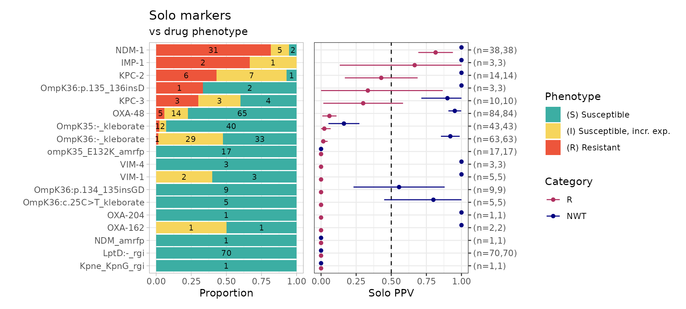
From this solo_ppv() plot, we can see that there are markers that are found alone which have strong support for a particular phenotype, e.g., NDM-1 association with meropenem resistance (n=31/38 R isolates), LptD:- identified by RGI (associated with susceptibility). Noting that LptD:- indicates a variant of LptD, so the variants need to be further investigated to see if there is a particular mutation/defect that is associated with meropenem susceptibility.Another way to investigate the association between AMR markers and
meropenem susceptibility is to use the amr_logistic()
function to perform logistic regression to analyse the relationship
between the markers and a specified antibiotic.
Logistic regression for AMRFinderPlus, RGI, Kleborate AMR Markers
combined_logist <- amr_logistic(
binary_matrix = combined_binary_matrix,
pheno_drug = "meropenem",
ecoff_col = "ecoff",
maf = 10, # filter for AMR markers in at least 10 samples
single_plot = TRUE
)
#> ...Fitting logistic regression model to R using logistf
#> Filtered data contains 1490 samples (391 => 1, 1099 => 0) and 14 variables.
#> ...Fitting logistic regression model to NWT using logistf
#> Filtered data contains 1490 samples (780 => 1, 710 => 0) and 14 variables.
#> Generating plots
#> Plotting 2 models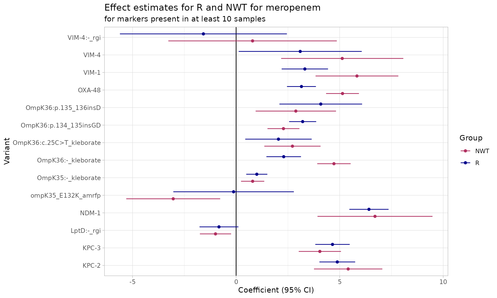
# model coefficients
combined_logist$modelR
#> # A tibble: 15 × 5
#> marker est ci.lower ci.upper pval
#> <chr> <dbl> <dbl> <dbl> <dbl>
#> 1 (Intercept) -5.23 -5.91 -4.55 0
#> 2 NDM-1 6.41 5.47 7.36 0
#> 3 KPC-3 4.65 3.82 5.48 0
#> 4 KPC-2 4.88 4.02 5.75 0
#> 5 LptD:-_rgi -0.828 -1.77 0.111 0.0839
#> 6 VIM-1 3.32 2.20 4.44 0.00000000623
#> 7 VIM-4:-_rgi -1.58 -5.61 2.45 0.443
#> 8 VIM-4 3.09 0.124 6.07 0.0411
#> 9 OXA-48 3.15 2.46 3.85 0
#> 10 OmpK36:p.134_135insGD 3.21 2.56 3.87 0
#> 11 OmpK36:p.135_136insD 4.09 2.09 6.08 0.0000597
#> 12 ompK35_E132K_amrfp -0.122 -3.03 2.79 0.935
#> 13 OmpK36:-_kleborate 2.30 1.46 3.13 0.0000000689
#> 14 OmpK35:-_kleborate 0.998 0.489 1.51 0.000123
#> 15 OmpK36:c.25C>T_kleborate 2.04 0.440 3.65 0.0125
#> Use ggplot2::autoplot() on this output to visualiseA coefficient above zero indicates that the presence of the AMR marker increases the likelihood of resistance, whereas a coefficient below zero indicates a decrease in probability of resistance. From the plot above showing AMR markers found in more than 10 isolates, majority have a positive association with resistance with the exception of LptD:- (identified by RGI), ompK35_E132K (identified by AMRFinderPlus), and VIM-4:- (identified by RGI).
Combinatorial PPV Analysis for AMRFinderPlus, RGI, Kleborate AMR Markers
comboPPV_combined_mero <- ppv(
binary_matrix = combined_binary_matrix,
order = "value",
min_set_size = 2,
pheno_drug = "Meropenem",
upset_grid = TRUE,
plot_assay = TRUE,
assay = "mic"
)
#> Scale for y is already present.
#> Adding another scale for y, which will replace the existing scale.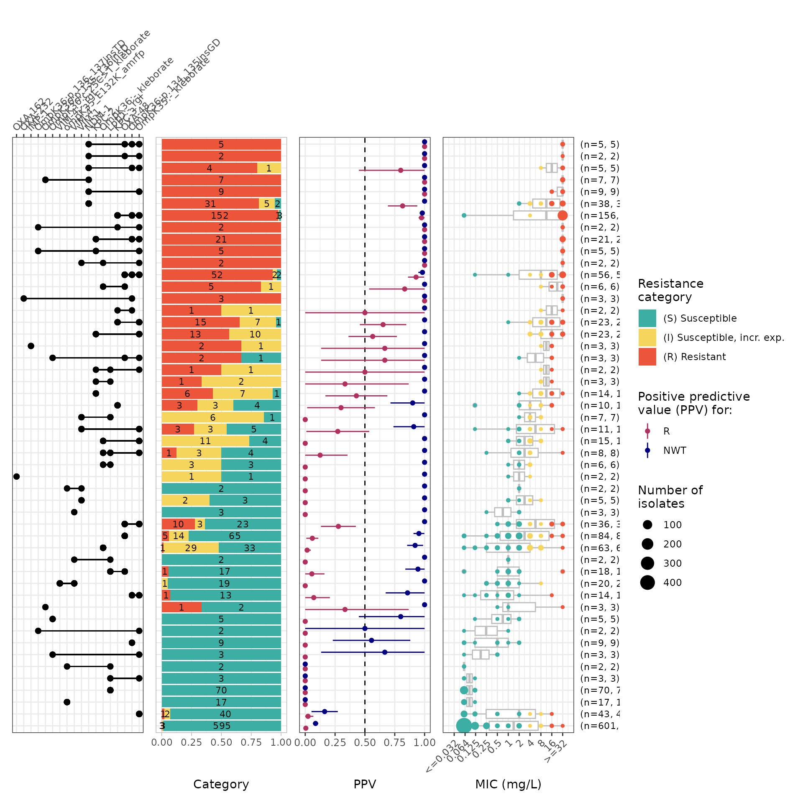
comboPPV_combined_mero$summary
#> # A tibble: 86 × 21
#> marker_list marker_count n combination_id R.n R.ppv R.ci_lower
#> <chr> <dbl> <int> <fct> <dbl> <dbl> <dbl>
#> 1 "" 0 601 0_0_0_0_0_0_0… 3 0.00499 0
#> 2 "OmpK36:c.25C>T_k… 1 5 0_0_0_0_0_0_0… 0 0 0
#> 3 "OmpK35:-_klebora… 1 43 0_0_0_0_0_0_0… 1 0.0233 0
#> 4 "OmpK35:-_klebora… 2 3 0_0_0_0_0_0_0… 0 0 0
#> 5 "OmpK36:-_klebora… 1 63 0_0_0_0_0_0_0… 1 0.0159 0
#> 6 "OmpK36:-_klebora… 2 1 0_0_0_0_0_0_0… 1 1 1
#> 7 "OmpK36:-_klebora… 2 15 0_0_0_0_0_0_0… 0 0 0
#> 8 "OXA-162" 1 2 0_0_0_0_0_0_0… 0 0 0
#> 9 "OXA-427_amrfp, O… 2 1 0_0_0_0_0_0_0… 0 0 0
#> 10 "NDM_amrfp" 1 1 0_0_0_0_0_0_0… 0 0 0
#> # ℹ 76 more rows
#> # ℹ 14 more variables: R.ci_upper <dbl>, R.denom <int>, NWT.n <dbl>,
#> # NWT.ppv <dbl>, NWT.ci_lower <dbl>, NWT.ci_upper <dbl>, NWT.denom <int>,
#> # median_excludeRangeValues <dbl>, q25_excludeRangeValues <dbl>,
#> # q75_excludeRangeValues <dbl>, n_excludeRangeValues <int>,
#> # median_ignoreRanges <dbl>, q25_ignoreRanges <dbl>, q75_ignoreRanges <dbl>